carapace-bin
carapace-bin is a multi-shell multi-command argument completer based on carapace-sh/carapace.
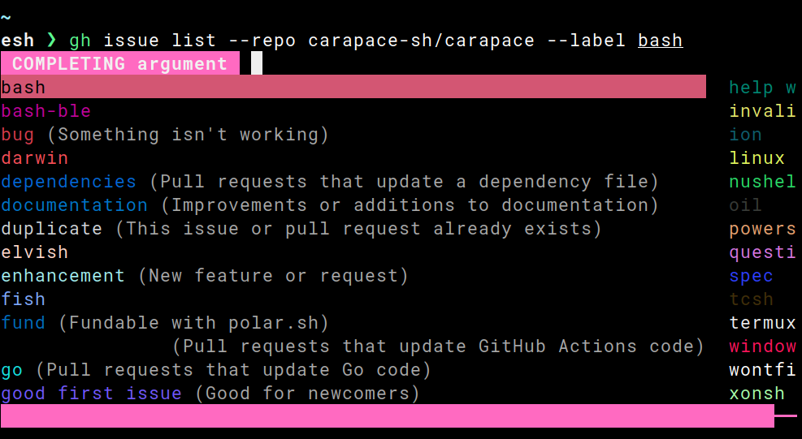
Supported shells:
Install
Manually
Download from releases and add carapace to PATH.
AUR
Install carapace-bin from AUR.
# e.g. with pamac
pamac install carapace-bin
DEB
Install from fury.io
# /etc/apt/sources.list.d/fury.list
deb [trusted=yes] https://apt.fury.io/rsteube/ /
apt-get update && apt-get install carapace-bin
Homebrew
Install from homebrew-core
brew install carapace
Install from rsteube/homebrew-tap
brew tap rsteube/homebrew-tap
brew install rsteube/tap/carapace
Mise mise
mise use -g carapace@latest
Nix
Install from nixpkgs
nix-shell -p carapace
PKGX
Install from pkgx.dev
pkgx install carapace
RPM
Install from fury.io
Yum
# /etc/yum.repos.d/fury.repo
[fury]
name=Gemfury Private Repo
baseurl=https://yum.fury.io/rsteube/
enabled=1
gpgcheck=0
yum install carapace-bin
Zypper
zypper ar --gpgcheck-allow-unsigned -f https://yum.fury.io/rsteube/ carapace
zypper install carapace-bin
Scoop
Install from ScoopInstaller/Extras (recommended)
scoop bucket add extras
scoop install extras/carapace-bin
Install from rsteube/scoop-bucket
scoop bucket add rsteube https://github.com/rsteube/scoop-bucket.git
scoop install carapace-bin
Termux
Install from termux/termux-packages
pkg install carapace
Install from carapace-sh/termux (gh_pages)
WIP: repo currently manually created
Manually
# $PREFIX/etc/apt/sources.list.d
deb [trusted=yes] https://termux.carapace.sh termux extras
apt update && apt install carapace-bin
Script
curl termux.carapace.sh | sh
Winget
Install from winget-pkgs
winget install -e --id rsteube.Carapace
X-CMD
Install from x-cmd.com
x env use carapace-bin
Selfupdate
With carapace --selfupdate specific nightly or stable releases can be installed.
Executable is installed to the GOBIN directory, essentially shadowing any system installation.
export PATH="$HOME/.local/bin:$HOME/go/bin:$PATH"
# │ │ └system installation (e.g. /usr/bin/carapace)
# │ └selfupdate/go based installation ($GOBIN)
# └user binaries
Requirements
Setup
This registers all the available completers. It is also possible to load a single one by replacing
_carapacewith the completer name (e.g.carapace chmod).
See UserConfigDir for details.
Bash
# ~/.bashrc
export CARAPACE_BRIDGES='zsh,fish,bash,inshellisense' # optional
source <(carapace _carapace)
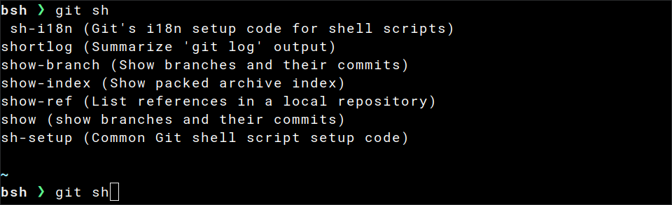
Cmd
# ~/AppData/Local/clink/carapace.lua
load(io.popen('carapace _carapace cmd-clink'):read("*a"))()
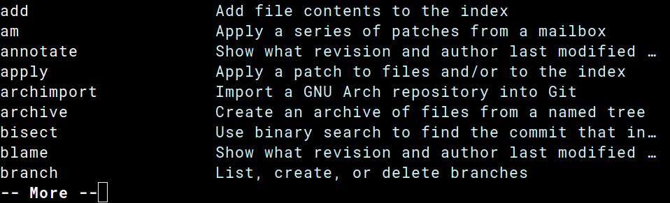
Needs clink.
Elvish
# ${UserConfigDir}/elvish/rc.elv
set-env CARAPACE_BRIDGES 'zsh,fish,bash,inshellisense' # optional
eval (carapace _carapace|slurp)
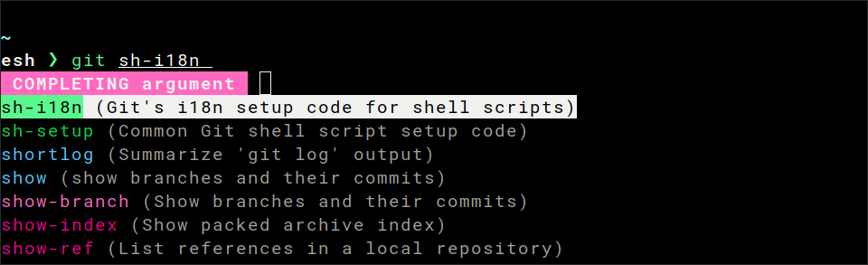
Fish
# ${UserConfigDir}/fish/config.fish
set -Ux CARAPACE_BRIDGES 'zsh,fish,bash,inshellisense' # optional
carapace _carapace | source
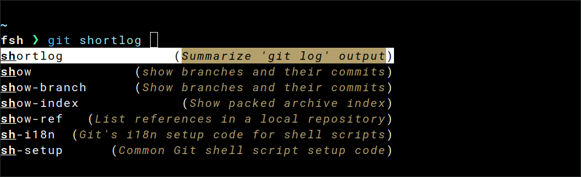
Nushell
## ${UserConfigDir}/nushell/env.nu
$env.CARAPACE_BRIDGES = 'zsh,fish,bash,inshellisense' # optional
mkdir $"($nu.cache-dir)"
carapace _carapace nushell | save --force $"($nu.cache-dir)/carapace.nu"
# ${UserConfigDir}/nushell/config.nu
source $"($nu.cache-dir)/carapace.nu"
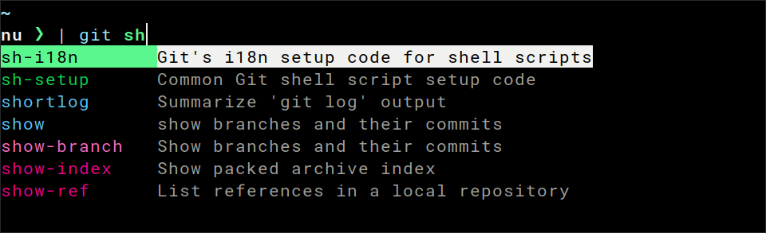
Oil
# ${UserConfigDir}/oil/oshrc
export CARAPACE_BRIDGES='zsh,fish,bash,inshellisense' # optional
source <(carapace _carapace)
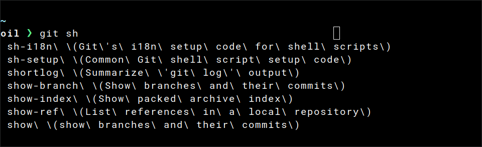
Powershell
# ${UserConfigDir}/powershell/Microsoft.PowerShell_profile.ps1
$env:CARAPACE_BRIDGES = 'zsh,fish,bash,inshellisense' # optional
Set-PSReadLineOption -Colors @{ "Selection" = "`e[7m" }
Set-PSReadlineKeyHandler -Key Tab -Function MenuComplete
carapace _carapace | Out-String | Invoke-Expression
Note: The
Set-PSReadlineKeyHandler -Key Tab -Function MenuCompleteline is required. The defaultCompletefunction (used by PSReadLine'sEmacsedit mode) will display raw ANSI escape codes (e.g.^[[21;22;23;24;25;29m^[[39;49m) in the prompt instead of styled completions.If you use
Set-PSReadLineOption -EditMode Emacs, make sure it is placed before theSet-PSReadlineKeyHandlerline above, as it resets key bindings and would override theTabbinding back toComplete.
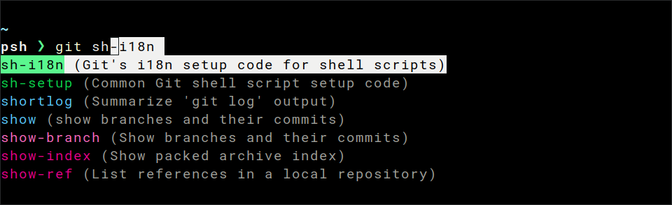
Tcsh
# ~/.tcshrc
setenv CARAPACE_BRIDGES 'zsh,fish,bash,inshellisense' # optional
set autolist
eval `carapace _carapace`
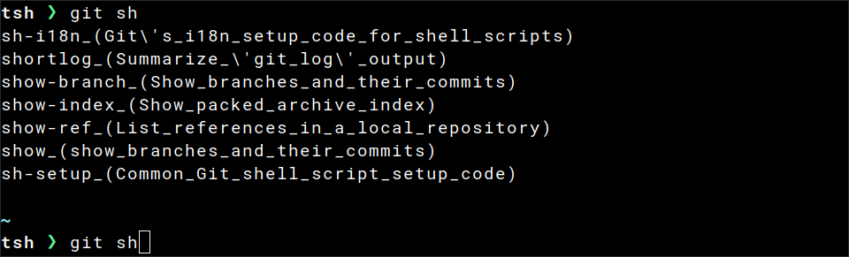
Xonsh
# ${UserConfigDir}/xonsh/rc.xsh
$CARAPACE_BRIDGES='zsh,fish,bash,inshellisense' # optional
$COMPLETIONS_CONFIRM=True
exec($(carapace _carapace))
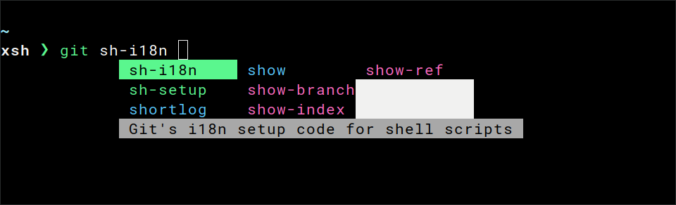
Zsh
# ${UserConfigDir}/zsh/.zshrc
autoload -U compinit && compinit
export CARAPACE_BRIDGES='zsh,fish,bash,inshellisense' # optional
zstyle ':completion:*' format $'\e[2;37mCompleting %d\e[m'
source <(carapace _carapace)
Order of groups can be configured with the zstyle group-order.
zstyle ':completion:*:git:*' group-order 'main commands' 'alias commands' 'external commands'
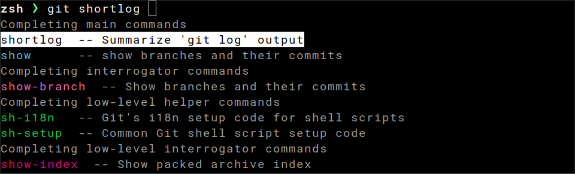
Environment
CARAPACE_BRIDGES
Which implicit bridges to enable.
The list of completers is cached to not impact shell startup time. Clear the cache with
carapace --clear-cacheif your system changes.
CARAPACE_COLOR
Whether to output color (default).
CARAPACE_COVERDIR
Coverage directory for sandbox tests (internal).
CARAPACE_ENV
Whether to register get-env, set-env and unset-env functions.
0- disabled1- enabled
CARAPACE_EXCLUDES
Which completers to exclude.
CARAPACE_HIDDEN
Whether to show hidden commands/flags.
0- disabled1- enabled2- enabled including_carapace
CARAPACE_LENIENT
Whether to allow unknown flags.
0- disabled1- enabled
CARAPACE_LOG
Whether to enable logging.
0- disabled1- enabled
CARAPACE_MATCH
Whether to match case insensitive.
0- case sensitive1- case insensitive
CARAPACE_MERGEFLAGS
Whether to merge flags to single tag group.
0- disabled1- enabled
Enabled by default in Zsh for side-by-side view.
CARAPACE_NOSPACE
Extend suffixes that prevent space suffix.
*- matches all
CARAPACE_SANDBOX
Mock context for sandbox tests (internal).
CARAPACE_TOOLTIP
Whether to enable tooltip style.
0- disabled1- enabled
Only affects Powershell.
CARAPACE_UNFILTERED
Whether to skip the final filtering step.
This enables fuzzy completion in Fish, but only works for (mostly) static values.
CARAPACE_ZSH_HASH_DIRS
Zsh hash directories (internal).
UserConfigDir
Depending on your operating system the UserConfigDir can vary.
- On Unix systems, it returns
$XDG_CONFIG_HOMEas specified by XDG if non-empty, else$HOME/.config.- On Darwin, it returns
$HOME/Library/Application Support.- On Windows, it returns
%AppData%.- On Plan 9, it returns
$home/lib.
Contrary to the above Carapace acknowledges
$XDG_CONFIG_HOMEon every operating system for its config directory.carapace --help # Some completions are cached at [/home/rsteube/.cache/carapace]. # Config is written to [/home/rsteube/.config/carapace]. # Specs are loaded from [/home/rsteube/.config/carapace/specs].
Groups
Completers are organized into groups.
androidtermux completersbridgebridged completersbsdbsd-like completerscommoncommon completersdarwinmacos completerslinuxlinux completersunixunix-like completersuseruser specssystemsystem specswindowswindows completers
You can list available completers of a group with carapace --list @{group}.
Binaries only contain relevant groups unless built with the build tag
force_all.
Priority
Multiple groups providing a completer for a command are ordered by priority.
-
darwin
usersystemdarwinbsdunixcommonbridge
-
linux
usersystemlinuxunixcommonbridge
-
termux
usersystemandroidlinuxunixcommonbridge
-
windows
usersystemwindowscommonbridge
You can list available completers of a command with carapace --list {command}.
Variants
Groups can contain multiple completers for the same command.
You can list available variants for a command with carapace --list {name}[/{variant}][@{group}].
Priority
Multiple variants within the same group are ordered by name.
- tldr
tealdeertldr-python-client
Choices
The default priority of completers can be overridden with carapace --choice {name}[/{variant}][@{group}].
Choices are stored as simple text files in your config directory.
carapace └── choices ├── sed # sed@bsd └── tldr # tldr/tldr-python-client
Bridges
Bridges are a special form of choices as they can be added as additional completers otherwise unknown.
With CARAPACE_BRIDGES completers from
zsh,fish,bash, andinshellisensecan largely determined and act as implicit fallback. But frameworks like cobra need to be set explicitly.
Currently available bridges:
- argcomplete
- argcomplete_v1 (legacy)
- aws
- bash
- carapace
- clap (experimental - needs clap-rs/clap#3166)
- click
- cobra
- complete
- fish
- inshellisense
- jj
- kingpin
- kitten
- powershell
- urfavecli
- urfavecli_v1 (legacy)
- yargs
- zsh
Bridging frameworks should be preferred to shells (e.g.
zsh) as these generally work better and have less overhead.
Completers
- acpi@linux Shows information from the /proc filesystem
- acpid@linux Advanced Configuration and Power Interface event daemon
- adb Android Debug Bridge
- age simple, modern, and secure file encryption
- agg asciinema gif generator
- alsamixer@linux soundcard mixer for ALSA soundcard driver, with ncurses interface
- ant software tool for automating software build processes
- apk@linux Alpine package manager
- aplay@linux command-line sound recorder and player for ALSA soundcard driver
- apropos search the manual page names and descriptions
- apt@linux apt is a commandline package manager
- apt-cache@linux query the APT cache
- apt-get@linux APT package handling utility
- ar create, modify, and extract from archives
- archlinux-java@linux Arch Linux helper script to set/unset/check/fix the enabled Java environment
- arecord@linux command-line sound recorder and player for ALSA soundcard driver
- aria2c The ultra fast download utility
- artisan Artisan is the command line interface included with Laravel
- asciinema Record and share your terminal sessions, the right way.
- atuin Magical shell history
- autoconf Generate a configuration script from a TEMPLATE-FILE
- avdmanager create and manage Android Virtual Devices
- awk@unix pattern scanning and processing language
- aws Universal Command Line Interface for Amazon Web Services
- baobab@linux A graphical disk usage analyzer for the GNOME deskto
- base32@unix Base32 encode or decode FILE, or standard input, to standard output
- base64@unix Base64 encode or decode FILE, or standard input, to standard output
- basename@unix strip directory and suffix from filenames
- bash@unix GNU Bourne-Again SHell
- bash-language-server@unix A language server for Bash
- bat a cat clone with syntax highlighting and Git integration
- batdiff Diff a file against the current git index, or display the diff between two files
- batgrep Quickly search through and highlight files using ripgrep
- batman Read system manual pages (man) using bat
- bats@unix Bash Automated Testing System
- bazel build system
- bc An arbitrary precision calculator language
- benthos A stream processor for mundane tasks
- black The uncompromising code formatter
- bloop Build and test Scala code
- bluetoothctl@linux Bluetooth Control Command Line Tool
- brew The missing package manager for macOS
- brotli compress or decompress files
- bru Bruno CLI
- btop@unix A monitor of resources
- buildctl build utility
- bun a fast bundler, transpiler, JavaScript Runtime and package manager for web software
- bunx bun package manager
- but A GitButler CLI tool
- cal display a calendar
- calibre Comprehensive e-book software
- capslock Capslock is a capability analysis CLI for Go packages
- carapace A multi-shell completion binary
- cargo Rust's package manager
- cargo-clippy Checks a package to catch common mistakes and improve your Rust code
- cargo-fmt format all bin and lib files of the current crate
- cargo-metadata Output the resolved dependencies of a package
- cargo-rm Remove a dependency from a Cargo.toml manifest file
- cargo-set-version Change a package's version in the local manifest file
- cargo-upgrade Update dependencies as recorded in the local lock file
- cargo-watch Watches over your Cargo project’s source
- cat@unix concatenate files and print on the standard output
- cfdisk display or manipulate a disk partition table
- charm Do Charm stuff
- chcpu configure CPUs
- chdman MAME Compressed Hunks of Data (CHD) manager
- cheese@linux tool to take pictures and videos from your webcam
- chgrp@unix change group ownership
- chmod@unix change file mode bits
- chown@unix change file owner and group
- chpasswd update passwords in batch mode
- chroma Chroma is a general purpose syntax highlighter
- chromium chromium browser
- chroot@unix run command or interactive shell with special root directory
- chsh@unix Change your login shell
- circleci Use CircleCI from the command line
- cksum@unix compute and verify file checksums
- clamav-config clamav config
- clamav-milter milter compatible scanner
- clambc Bytecode Analysis and Testing Tool
- clamconf Clam AntiVirus configuration utility
- clamd an anti-virus daemon
- clamdscan scan files and directories for viruses using Clam AntiVirus Daemon
- clamdtop monitor the Clam AntiVirus Daemon
- clamonacc an anti-virus on-access scanning daemon and clamd client
- clamscan scan files and directories for viruses
- clamsubmit File submission utility for ClamAV
- clion CLion CLI
- cmus@unix Curses based music player
- code Visual Studio Code
- code-insiders Visual Studio Code Insiders
- codecov codecov uploader
- comm@unix compare two sorted files line by line
- conda conda is a tool for managing and deploying applications, environments and packages
- conda-content-trust Signing and verification tools for Conda
- conda-env Manage conda environments
- conky A system monitor for X originally based on the torsmo code
- consul Consul automates networking for simple and secure application delivery
- coredumpctl List or retrieve coredumps from the journal
- cp@unix copy files and directories
- csplit@unix split a file into sections determined by context lines
- csview A high performance csv viewer with cjk/emoji support
- cura Powerful, easy-to-use 3D printing software
- curl transfer a URL
- cut@unix remove sections from each line of files
- d2 compiles and renders d2 diagrams into svgs
- dagger The Dagger CLI provides a command-line interface to Dagger.
- darktable a digital photography workflow application
- darktable-cli a command line darktable variant
- dart A command-line utility for Dart development
- datagrip DataGrip CLI
- dataspell DataSpell CLI
- date@unix print or set the system date and time
- dbt An ELT tool for managing your SQL transformations and data models
- dc an arbitrary precision calculator
- dd@unix convert and copy a file
- deadcode The deadcode command reports unreachable functions in Go programs
- delta A viewer for git and diff output
- deno A modern JavaScript and TypeScript runtime
- devbox Instant, easy, predictable development environments
- df@unix report file system disk space usage
- dfc report file system space usage information with style
- dict Query a dictd server for the definition of a word
- diff compare files line by line
- diff3 compare three files line by line
- dig DNS lookup utility
- dir@unix list directory contents
- dircolors@unix color setup for ls
- direnv unclutter your .profile
- dirname@unix strip last component from file name
- dive Docker Image Visualizer & Explorer
- dlv Delve is a debugger for the Go programming language.
- dmenu@linux dynamic menu
- dmesg@linux Display or control the kernel ring buffer
- dms A UPnP DLNA Digital Media Server
- dngconverter Adobe DNG Converter
- dnsmasq A lightweight DHCP and caching DNS server
- doas execute a command as another user
- docker A self-sufficient runtime for containers
- docker-buildx Docker Buildx
- docker-compose Docker Compose
- docker-scan A tool to scan your images
- dockerd@linux A self-sufficient runtime for containers
- doing CLI for repository/issue workflow on Azure Devops
- dos2unix DOS/Mac to Unix and vice versa text file format converter
- downgrade@linux Downgrade Arch Linux packages
- dpkg package manager for Debian
- du@unix estimate file space usage
- ebook-convert Convert an e-book from one format to another
- egrep print lines that match patterns
- electron Build cross platform desktop apps with JavaScript, HTML, and CSS
- elvish expressive programming language and a versatile interactive shell
- env@unix run a program in a modified environment
- envsubst@unix Substitutes the values of environment variables
- exa a modern replacement for ls
- expand@unix convert tabs to spaces
- expr@unix evaluate expressions
- eza a modern replacement for ls
- faas-cli Manage your OpenFaaS functions from the command line
- factor@unix factor numbers
- fakechroot@unix gives a fake chroot environment
- fakeroot@unix run a command in an environment faking root privileges for file manipulation
- fastfetch A neofetch-like tool for fetching system information and displaying them in a pretty way
- fc-cache@linux Build font information caches
- fc-cat@linux read font information cache files
- fc-conflist@linux list the configuration files processed by Fontconfig
- fc-list@linux list available fonts
- fd find entries in the filesystem
- fdisk manipulate disk partition table
- ffmpeg Hyper fast Audio and Video encoder
- fgrep print lines that match patterns
- file@unix determine file type
- fileicon@darwin macOS CLI for managing custom icons for files and folders
- find@unix search for files in a directory hierarchy
- firefox Firefox Browser
- fish@unix the friendly interactive shell
- flatpak@linux Linux application sandboxing and distribution framework
- flutter Manage your Flutter app development
- fmt@unix simple optimal text formatter
- fnm A fast and simple Node.js manager
- fold@unix wrap each input line to fit in specified width
- foot@linux A fast, lightweight and minimalistic Wayland terminal emulator
- free@linux Display amount of free and used memory in the system
- freeze Generate images of code and terminal output
- ftp File Transfer Protocol client
- ftpd File Transfer Protocol daemon
- fury Command line interface to Gemfury API
- fzf a command-line fuzzy finder
- gatsby Build blazing fast, modern apps and websites with React
- gcloud manage Google Cloud Platform resources and developer workflow
- gdb This is the GNU debugger
- gdown Google Drive Public File Downloader when Curl/Wget Fails
- gdu Pretty fast disk usage analyzer written in Go
- get-env get environment variable
- gftp@linux file transfer client for *NIX based machines
- gh GitHub CLI
- gh-copilot Your AI command line copilot
- gh-dash A beautiful CLI dashboard for GitHub
- ghostty a fast, feature-rich, and cross-platform terminal emulator
- gimp an image manipulation and paint program
- git the stupid content tracker
- git-abort Abort current rebase, merge or cherry-pick, without the need to find exact command in history
- git-alias Define, search and show aliases
- git-archive-file Export the current HEAD of the git repository to an archive
- git-authors Generate authors report
- git-browse Opens the current git repository website in your default web browser
- git-browse-ci Opens the current git repository CI page in your default web browser
- git-clang-format run clang-format on lines that differ
- git-clear Rigorously clean up a repository
- git-clear-soft Soft clean up a repository
- git-coauthor Add a co-author to the last commit
- git-extras Awesome GIT utilities
- git-info Returns information on current repository
- git-standup Recall the commit history
- git-unlock Unlock a file excluded from version control
- git-utimes only touch files that are newer than their last commit date
- gitk The Git repository browser
- gitui blazing fast terminal-ui for git
- glab A GitLab CLI tool.
- glow Render markdown on the CLI, with pizzazz!
- gm command-line utility to create, edit, compare, convert, or display images
- gnome-keyring@linux The gnome-keyring commandline tool
- gnome-keyring-daemon@linux The Gnome Keyring Daemon
- gnome-maps@linux A map application for GNOME
- gnome-terminal@linux A terminal emulator for GNOME
- go Go is a tool for managing Go source code
- go-carpet show test coverage for Go source files
- go-tool-asm go assembler
- go-tool-buildid Buildid displays or updates the build ID stored in a Go package or binary.
- go-tool-cgo Cgo enables the creation of Go packages that call C code
- go-tool-compile compiles a single Go packag
- go-tool-covdata read and manipulate coverage data files
- go-tool-cover analyze coverage profiles
- go-tool-dist Dist helps bootstrap, build, and test the Go distribution
- go-tool-doc show documentation for package or symbol
- go-tool-fix Fix finds Go programs that use old APIs
- go-tool-link go linker
- go-tool-mockgen mock interfaces
- go-tool-nm Nm lists the symbols defined or used by an object file, archive, or executabl
- go-tool-objdump Objdump disassembles executable files
- go-tool-pack Pack is a simple version of the traditional Unix ar tool
- gocyclo Calculate cyclomatic complexities of Go functions
- gofmt format Go source code
- goimports updates your Go import lines
- goland GoLand CLI
- golangci-lint golangci-lint is a smart linters runner.
- gonew Gonew starts a new Go module by copying a template module
- google-chrome chrome browser
- gopls gopls is a Go language server
- goreleaser Release engineering, simplified
- goweight A tool to analyze and troubleshoot a Go binary size
- gparted@linux GNOME Partition Editor for manipulating disk partitions
- gpasswd@linux administer /etc/group and /etc/gshadow
- gpg OpenPGP encryption and signing tool
- gpg-agent Secret key management for GnuPG
- gradle Gradle Build Tool
- grep print lines that match patterns
- groupadd@linux create a new group
- groupdel@linux delete a group
- groupmems@linux administer members of a user's primary group
- groupmod@linux modify a group definition on the system
- groups@unix display current group names
- grype A vulnerability scanner for container images, filesystems, and SBOMs
- gsa A tool for analyzing the size of compiled Go binaries
- gulp Command Line Interface for gulp
- gum A tool for glamorous shell scripts
- gunzip Uncompress files
- gzip Compress or uncompress files
- halt halt the machine
- head@unix output the first part of files
- helix A post-modern text editor
- helm The Helm package manager for Kubernetes.
- helmsman Helmsman is a Helm Charts as Code tool
- hexchat IRC Client
- hexdump Display file contents in hexadecimal, decimal, octal, or ascii
- hostid@unix print the numeric identifier for the current host
- hostname show or set system host name
- htop interactive process viewer
- http command-line HTTP client for the API era
- https command-line HTTP client for the API era
- hugetop report huge page information
- hugo hugo builds your site
- hurl run and test HTTP requests with plain text
- hwinfo@linux Probe for hardware
- hx A post-modern text editor
- i3@linux an improved dynamic, tiling window manager
- i3-scrot@linux simple screenshot script
- i3exit@linux exit-script for i3
- i3lock@linux improved screen locker
- i3status@linux Generates a status line for i3bar, dzen2, xmobar or lemonbar
- i3status-rs@linux A feature-rich and resource-friendly replacement for i3status, written in Rust
- id@unix Print user and group information
- idea IntelliJ IDEA CLI
- imv@linux Image viewer for X11 and Wayland
- inkscape an SVG (Scalable Vector Graphics) editing program
- inshellisense IDE style command line auto complete
- install@unix copy files and set attributes
- ion@linux The Ion Shell
- jar create an archive for classes and resources
- java Launches a Java application
- javac Reads Java class and interface definitions and compiles them into bytecode and class files
- jj Jujutsu (An experimental VCS)
- join@unix join lines of two files on a common field
- journalctl@linux Query the journal
- jq Command-line JSON processor
- julia high-level, high-performance dynamic programming language for technical computing
- just Just a command runner
- kak a vim-inspired, selection oriented code editor
- kak-lsp Kakoune Language Server Protocol Client
- kill@unix Forcibly terminate a process
- killall@unix kill processes by name
- kmonad an onion of buttons
- kompose A tool helping Docker Compose users move to Kubernetes
- kotlin run Kotlin programs, scripts or REPL
- kotlinc Kotlin command-line compiler
- ktlint An anti-bikeshedding Kotlin linter with built-in formatter
- kubeadm kubeadm: easily bootstrap a secure Kubernetes cluster
- kubectl kubectl controls the Kubernetes cluster manager
- kubeseal A Kubernetes controller and tool for one-way encrypted Secrets
- last@linux Show a listing of last logged in users
- lastb@linux Show a listing of last logged in users
- lastlog@linux reports the most recent login of all users or of a given user
- lazygit simple terminal UI for git commands
- lf terminal file manager
- light@linux a program to control backlight controllers
- lightdm@linux a display manager
- link@unix call the link function to create a link to a file
- ln@unix make links between files
- lnav ncurses-based log file viewer
- lncrawl Generate and download e-books from online sources
- locale@linux Get locale-specific information
- localectl@linux Query or change system locale and keyboard settings
- logname@unix print user's login name
- ls@unix list directory contents
- lsb_release@linux prints certain LSB (Linux Standard Base) and Distribution information
- lsblk@linux list block devices
- lsclocks@linux display system clocks
- lscpu@linux display information about the CPU architecture
- lsfd@linux list file descriptors
- lsirq@linux utility to display kernel interrupt information
- lslocks@linux List local system locks
- lslogins@linux Display information about known users in the system
- lsmem@linux list the ranges of available memory with their online status
- lsns@linux List system namespaces
- lsusb@linux list USB devices
- lua Lua interpreter
- lzcat@linux Compress or decompress .xz and .lzma files
- lzma Compress or decompress .xz and .lzma files
- magick convert between image formats as well as resize an image, blur, crop, despeckle, dither, draw on, flip, join, re-sample, and much more
- make GNU make utility to maintain groups of programs
- makepkg@linux make packages compatible for use with pacman
- man an interface to the system reference manuals
- marp A CLI interface for Marp and Marpit based converters
- mcomix GTK Comic Book Viewer
- md5sum@unix compute and check MD5 message digest
- mdbook Creates a book from markdown files
- meld Meld is a file and directory comparison tool
- melt melt generates a seed phrase from an SSH key
- micro A modern and intuitive terminal-based text editor
- minikube minikube quickly sets up a local Kubernetes cluster
- mitmproxy interactive, SSL/TLS-capable intercepting proxy
- mix A build automation tool for working with applications written in the Elixir programming language
- mkcert simple tool for making locally-trusted development certificates
- mkdir@unix make directories
- mkfifo@unix make FIFOs (named pipes)
- mkfs@linux Make a Linux filesystem
- mknod@unix make block or character special files
- mkswap@linux Set up a Linux swap area
- mktemp@unix create a temporary file or directory
- modinfo@linux Show information about a Linux Kernel module
- modprobe@linux Add and remove modules from the Linux Kernel
- molecule Testing framework to aid in the development of Ansible roles
- more display the contents of a file in a terminal
- mosh mobile shell with roaming and intelligent local echo
- mount mount a filesystem
- mousepad Mousepad is a simple text editor for the Xfce desktop environment
- mpv a media player
- mv@unix move (rename) files
- mvn Apache Maven is a software project management and comprehension tool
- n-m3u8dl-re Cross-Platform, modern and powerful stream downloader for MPD/M3U8/ISM
- nano Nano's ANOther editor, inspired by Pico
- nc simple Unix utility which reads and writes data across network connections
- ncdu NCurses Disk Usage
- neomutt The NeoMutt Mail User Agent
- netcat simple Unix utility which reads and writes data across network connections
- newman Newman is a command-line collection runner for Postman
- newrelic The New Relic CLI
- nfpm Packages apps on RPM, Deb and APK formats based on a YAML configuration file
- ng The Angular CLI
- nice@unix run a program with modified scheduling priority
- nilaway Static Analysis tool to detect potential Nil panics in Go code
- nix a tool for reproducible and declarative configuration management
- nix-build build a Nix expression
- nix-channel manage Nix channels
- nix-instantiate instantiate store derivations from Nix expression
- nix-shell start an interactive shell based on a Nix expression
- nixos-rebuild reconfigure a NixOS machine
- nl@unix number lines of files
- nmcli command-line tool for controlling NetworkManager
- node server-side JavaScript runtime
- nohup@unix run a command immune to hangups, with output to a non-tty
- npm the package manager for JavaScript
- nproc@unix print the number of processing units available
- ntpd NTP daemon program
- nu Nushell
- numfmt@unix Convert numbers from/to human-readable strings
- nvim edit text
- od@unix dump files in octal and other formats
- ollama Large language model runner
- openscad script file based graphical CAD environment
- openssl OpenSSL command line program
- optipng Optimize Portable Network Graphics files
- orb@darwin Manage OrbStack and its machines
- packer Create identical machine images for multiple platforms from a single source configuration.
- pacman@linux package manager utility
- pacman-conf@linux query pacman's configuration file
- pacman-db-upgrade@linux Upgrade the local pacman database to a newer format
- pacman-key@linux Manage pacman's list of trusted keys
- pacman-mirrors@linux generate pacman mirrorlist
- palemoon Pale Moon browser
- pamac@linux package manager utility
- pandoc general markup converter
- paru@linux Feature packed AUR helper
- pass stores, retrieves, generates, and synchronizes passwords securely
- passwd change user password
- paste@unix merge lines of files
- patch@unix appy a diff file to an original
- pathchk check whether file names are valid or portable
- patool An archive file manager
- pcmanfm@linux A lightweight Gtk+ based file manager for X Window
- pdfattach Portable Document Format (PDF) document embedded file creator (version 3.03)
- pdfdetach Portable Document Format (PDF) document embedded file extractor (version 3.03)
- pdffonts Portable Document Format (PDF) font analyzer (version 3.03)
- pdfimages Portable Document Format (PDF) image extractor (version 3.03)
- pdfinfo Portable Document Format (PDF) document information extractor (version 3.03)
- pdfseparate Portable Document Format (PDF) page extractor
- pdfsig Portable Document Format (PDF) digital signatures tool
- pdftocairo Portable Document Format (PDF) to PNG/JPEG/TIFF/PDF/PS/EPS/SVG using cairo
- pdftohtml program to convert PDF files into HTML, XML and PNG images
- pdftoppm Portable Document Format (PDF) to Portable Pixmap (PPM) converter (version 3.03)
- pdftops Portable Document Format (PDF) to PostScript converter (version 3.03)
- pdftotext Portable Document Format (PDF) to text converter (version 3.03)
- pdfunite Portable Document Format (PDF) page merger
- pgrep@unix look up processes based on name and other attributes
- php PHP Command Line Interface
- phpstorm PhpStorm CLI
- picard Picard is a cross-platform music tagger written in Python
- pidof@linux find the process ID of a running program
- pidwait@linux wait for processes based on name and other attributes
- pigz compress or expand files
- ping send ICMP ECHO_REQUEST to network hosts
- pinky@unix lightweight finger
- pip package manager for Python packages
- pixi Developer Workflow and Environment Management
- pkg@android A tool for managing packages
- pkgsite Pkgsite extracts and generates documentation for Go programs
- pkill@unix look up for processes based on name and other attributes
- pmap report memory map of a process
- pngcheck Test PNG, JNG or MNG image files for corruption
- pnpm Fast, disk space efficient package manager
- poweroff poweroff the machine
- powertop The Linux PowerTOP tool
- pprof pprof is a tool for visualization and analysis of profiling data
- pr@unix convert text files for printing
- present present implements parsing and rendering of present file
- prettybat Pretty-print source code and highlight it with bat
- prettyping This script is a wrapper around the system's "ping" tool
- printenv@unix print all or part of environment
- procs a replacement for
pswritten in Rust - ps@unix report a snapshot of the current processes
- ptx@unix produce a permuted index of file contents
- pulumi Pulumi command line
- pwd@unix Print the full filename of the current working directory
- pwdx@unix report current working directory of a process
- pycharm PyCharm CLI
- python an interpreted, interactive, object-oriented programming language
- qmk CLI wrapper for running QMK commands
- qpdf PDF transformation software
- qrencode Encode input data in a QR Code and save as a PNG or EPS image
- qutebrowser a keyboard-driven, vim-like browser based on PyQt5
- ranger visual file manager
- readlink@unix print resolved symbolic links or canonical file names
- reboot reboot the machine
- redis-cli Redis command line interface
- rename@unix rename files
- restic Backup and restore files
- resume-cli command line tool for JSON Resume
- rg recursively search current directory for lines matching a pattern
- rider Rider CLI
- rifle ranger's file opener
- ripsecrets Prevent committing secret keys into your source code
- rm@unix remove files or directories
- rmdir@unix remove empty directories
- rmmod Simple program to remove a module from the Linux Kernel
- rsync a fast, versatile, remote (and local) file-copying tool
- rubymine RubyMine CLI
- run0@linux Elevate privileges interactively
- rust-analyzer LSP server for the Rust programming language
- rustc compiler for the Rust programming language
- rustdoc generate documentation for Rust projects
- rustrover RustRover CLI
- rustup The Rust toolchain installer
- saw A fast, multipurpose tool for AWS CloudWatch Logs
- scp OpenSSH secure file copy
- script make typescript of terminal session
- scriptlive re-run session typescripts, using timing information
- scriptreplay play back typescripts, using timing information
- scrot@linux command line screen capture utility
- sd Intuitive find & replace CLI
- sdkmanager Android SDK manager
- sed@unix stream editor for filtering and transforming text
- sed@bsd stream editor
- semver A JavaScript implementation of the https://semver.org/ specification
- seq@unix print a sequence of numbers
- serie A rich git commit graph in your terminal, like magic 📚
- set-env set environment variable
- sftp OpenSSH secure file transfer
- sha1sum@unix compute and check SHA1 message digest
- sha224sum@unix Print or check SHA224 (224-bit) checksums
- sha256sum@unix compute and check SHA256 message digest
- sha384sum@unix Print or check SHA384 (384-bit) checksums
- sha512sum@unix Print or check SHA512 (512-bit) checksums
- showkey@linux examine the codes sent by the keyboard
- shred@unix overwrite a file to hide its contents, and optionally delete it
- shutdown Shut down the system
- singularity@linux Application container and unprivileged sandbox platform for Linux
- skhd@darwin Simple hotkey daemon for macOS
- slabtop display kernel slab cache information in real time
- sleep@unix delay for a specified amount of time
- slides Terminal based presentation tool
- soft A self-hostable Git server for the command line
- sort@unix sort lines of text files
- speedtest-cli Command line interface for testing internet bandwidth using speedtest.net
- split@unix split a file into pieces
- sqlite3 A command-line interface for SQLite
- ssh OpenSSH remote login client
- ssh-agent OpenSSH authentication agent
- ssh-copy-id use locally available keys to authorise logins on a remote machine
- ssh-keygen OpenSSH authentication key utility
- st@linux simple terminal
- starship The cross-shell prompt for astronauts
- stat@unix display file or file system status
- staticcheck The advanced Go linter
- strings print the sequences of printable characters in files
- stty@unix change and print terminal line settings
- su@unix run a command with substitute user and group ID
- sudo@unix execute a command as another user
- sudoedit@unix edit files as another user
- sudoreplay@unix replay sudo session logs
- sulogin single-user login
- sum@unix checksum and count the blocks in a file
- supervisorctl control applications run by supervisord from the cmd line
- supervisord run a set of applications as daemons
- svg-term Share terminal sessions as razor-sharp animated SVG everywhere
- svgcleaner clean up your SVG files from the unnecessary data
- sway@linux An i3-compatible Wayland compositor
- swaybar@linux bar for swaywm
- swaybg@linux Background for Wayland
- swayidle@linux Idle manager for Wayland
- swaylock@linux Screen locker for Wayland
- swaymsg@linux Send messages to a running instance of sway over the IPC socket
- swaynag@linux Show a warning or error message with buttons
- syft Generate a package SBOM
- sync@unix Synchronize cached writes to persistent storage
- sysctl@linux configure kernel parameters at runtime
- systemctl@linux Query or send control commands to the system manager
- systemd-analyze@linux Analyze and debug system manager
- tac@unix concatenate and print files in reverse
- tail@unix output the last part of files
- taplo A TOML toolkit written in Rust
- tar@unix tar - an archiving utility
- task A task runner / simpler Make alternative written in Go
- tea command line tool to interact with Gitea
- tee@unix read from standard input and write to standard output and files
- telnet User interface to TELNET
- templ A language for writing HTML user interfaces in Go
- termux-apt-repo Create a repository with deb files
- terraform infrastructure as code software tool
- terraform-ls Terraform Language Server
- terragrunt Terragrunt is a thin wrapper for Terraform
- terramate A tool for managing terraform stacks
- tesseract command-line OCR engine
- tig text-mode interface for Git
- timeout@unix run a command with a time limit
- tinygo TinyGo is a Go compiler for small places
- tldr/tealdeer A fast TLDR client
- tldr/tldr-python-client Python command line client for tldr
- tload graphic representation of system load average
- tmate Instant terminal sharing
- tmux@unix terminal multiplexer
- tofu The open source infrastructure as code tool
- toit.lsp start the lsp server
- toit.pkg The Toit package manager
- top display Linux processes
- tor-browser Tor Browser
- tor-gencert Generate certs and keys for Tor directory authorities
- tor-print-ed-signing-cert print expiration date of ed25519 signing certificate
- tor-resolve resolve a hostname to an IP address via tor
- torsocks Shell wrapper to simplify the use of the torsocks(8) library to transparently torify an application
- touch@unix change file timestamps
- tox automation project
- tr@unix translate or delete characters
- traefik Traefik is a modern HTTP reverse proxy and load balancer made to deploy microservices with ease
- transmission-cli A fast and easy BitTorrent client
- transmission-create A command-line utility to create .torrent files
- transmission-daemon A daemon-based BitTorrent client
- transmission-edit A command-line utility to modify .torrent files' announce URLs
- transmission-remote A remote control utility for transmission-daemon and transmission
- transmission-show A command-line utility to show .torrent file metadata
- tree list contents of directories in a tree-like format
- truncate@unix Shrink or extend the size of each FILE to the specified size
- ts timestamp input
- tsc The TypeScript Compiler
- tsh Teleport Command Line Client
- tshark Dump and analyze network traffic
- tsort@unix perform topological sort
- tty@linux print the file name of the terminal connected to standard input
- ttyd@linux ttyd is a tool for sharing terminal over the web
- turbo The build system that makes ship happen
- typst A new markup-based typesetting system that is powerful and easy to learn.
- ufw program for managing a netfilter firewall
- umount Unmount filesystems
- uname@linux print system information
- unbrotli compress or decompress files
- unexpand@unix convert spaces to tabs
- uniq@unix report or omit repeated lines
- unlink@unix call the unlink function to remove the specified file
- unlzma Compress or decompress .xz and .lzma files
- unpigz compress or expand files
- unset-env unset environment variable
- unxz Compress or decompress .xz and .lzma files
- unzip list, test and extract compressed files in a ZIP archive
- upower UPower command line tool
- uptime@unix Tell how long the system has been running
- upx compress or expand executable files
- useradd@linux create a new user or update default new user information
- userdel@linux delete a user account and related files
- usermod@linux modify a user account
- users@unix print the user names of users currently logged in to the current host
- vagrant tool for building and managing virtual machine environments
- vdir@unix list directory contents
- vercel Develop. Preview. Ship.
- vhs Run a given tape file and generates its outputs.
- vi screen oriented (visual) display editor based on ex
- viewnior@linux simple, fast and elegant image viewer
- vim Vi IMproved, a programmer's text editor
- visudo safely edit the sudoers file
- viu View images right from the terminal
- vivid LS_COLORS manager with multiple themes
- vlc the VLC media player
- vmstat Report virtual memory statistics
- volta The JavaScript Launcher
- w Show who is logged on and what they are doing
- watch execute a program periodically, showing output fullscreen
- watchexec Execute commands when watched files change
- watchgnupg Read and print logs from a socket
- waypoint Easy application deployment for Kubernetes and Amazon ECS
- wc@unix print newline, word, and byte counts for each file
- webstorm WebStorm CLI
- wezterm Wez's Terminal Emulator
- wget a non-interactive network retriever
- whereis@linux Locate the binary, source, and manual-page files for a command
- which@unix Write the full path of COMMAND(s) to standard output
- who@unix show who is logged on
- whoami@unix print effective userid
- wine@unix run Windows programs on Unix
- wineboot@unix perform Wine initialization, startup, and shutdown task
- winepath@unix Tool to convert Unix paths to/from Win32 paths
- wineserver@unix the Wine server
- winetricks@unix manage virtual Windows environments using Wine
- winget@windows Windows Package Manager
- wire Compile-time Dependency Injection for Go
- wireshark Interactively dump and analyze network traffic
- wishlist The SSH Directory
- wl-mirror@linux a simple Wayland output mirror client
- woeusb@linux A Linux program to create a Windows USB stick installer
- xargs@unix build and execute command lines from standard input
- xbacklight@linux adjust backlight brightness using RandR extension
- xbps-alternatives@linux XBPS utility to handle alternatives
- xbps-checkvers@linux XBPS utility to check for outdated packages
- xbps-create@linux XBPS utility to create binary packages
- xbps-dgraph@linux XBPS utility to generate package dot graphs
- xbps-digest@linux XBPS utility to generate message digests
- xbps-fbulk@linux XBPS utility to perform a fast bulk build of void-packages
- xbps-fetch@linux XBPS utility to fetch files from URLs
- xbps-install@linux XBPS utility to (re)install and update packages
- xbps-pkgdb@linux XBPS utility to report/fix issues and modify the package database (pkgdb)
- xbps-query@linux XBPS utility to query for package and repository information
- xbps-reconfigure@linux XBPS utility to configure installed packages
- xbps-remove@linux XBPS utility to remove packages
- xbps-rindex@linux XBPS utility to manage local binary package repositories
- xbps-uchroot@linux XBPS utility to chroot and bind mount with Linux namespaces
- xbps-uhelper@linux XBPS helper utilities
- xbps-uunshare@linux XBPS utility to chroot and bind mount with Linux user namespaces
- xclip@linux command line interface to X selections
- xdotool@linux command-line X11 automation tool
- xh Friendly and fast tool for sending HTTP requests
- xonsh Python-powered shell
- xz Compress or decompress .xz and .lzma files
- xzcat Compress or decompress .xz and .lzma files
- yarn Yarn is a package manager that doubles down as project manager
- yay@linux An AUR Helper written in Go
- yes@unix output a string repeatedly until killed
- yj Convert between YAML, TOML, JSON, and HCL
- youtube-dl download videos from youtube.com or other video platforms
- yt-dlp A youtube-dl fork with additional features and fixes
- zathura@unix a document viewer
- zcat@linux compress or expand files
- zip package and compress (archive) files
- zoxide A smarter cd command for your terminal
Style
Transformations can be applied to files and specific values.
This is only supported in elvish, nushell, powershell, xonsh and zsh.
File
Files can be styled with the LS_COLORS environment variable (e.g. using vivid):
# elvish
set-env LS_COLORS (vivid generate dracula)
# powershell
$env:LS_COLORS = (vivid generate dracula)
# zsh
export LS_COLORS=$(vivid generate dracula)
Value
Values can be styled with a comma separated list of transformations:
# set
carapace --style 'carapace.Value=bold,magenta'
# clear
carapace --style 'carapace.Description='
Generic configuration like default value and description style can be found under
carapace.{key}
Scheme
How the default colors look depends on your terminal color scheme.
It is recommended to choose one with a high contrast so that every color is well readable.
Transformations
Transformations are adopted from elvish:
Each
$style-transformercan be one of the following:
- A boolean attribute name:
- One of
bold,dim,italic,underlined,blinkandinversefor setting the corresponding attribute.- An attribute name prefixed by
no-for unsetting the attribute.- An attribute name prefixed by
toggle-for toggling the attribute between set and unset.- A color name for setting the text color, which may be one of the following:
- One of the 8 basic ANSI colors:
black,red,green,yellow,blue,magenta,cyanandwhite.- The bright variant of the 8 basic ANSI colors, with a
bright-prefix.- Any color from the xterm 256-color palette, as
colorX(such ascolor12).- A 24-bit RGB color written as
#RRGGBB(such as'#778899'). Note: You need to quote such values, since an unquoted#introduces a comment (e.g. use'bg-#778899'instead ofbg-#778899).- A color name prefixed by
fg-to set the foreground color. This has the same effect as specifying the color name without thefg-prefix.- A color name prefixed by
bg-to set the background color.
Spec
Custom completions can be defined using yaml files.
see carapace-spec for more documentation
# yaml-language-server: $schema=https://carapace.sh/schemas/command.json
name: mycmd
description: my command
flags:
--optarg?: optarg flag
-r, --repeatable*: repeatable flag
-v=: flag with value
persistentflags:
--help: bool flag
completion:
flag:
optarg: ["one", "two\twith description", "three\twith style\tblue"]
v: ["$files"]
commands:
- name: sub
description: subcommand
completion:
positional:
- ["$list(,)", "1", "2", "3"]
- ["$directories"]
Custom Macros
Carapace provides a range of custom macros:
carapace --macro # list macros
carapace --macro color.HexColors # show macro details
carapace --macro color.HexColors <TAB> # test macro
User
User defined Specs are automatically loaded by carapace _carapace from ${UserConfigDir}/carapace/specs.
Added files initially need a new shell to be started for it to be registered with
carapace _carapace. Afterwards any change to it has an immediate effect.It is mandatory that the file name matches the name defined in the spec (e.g.
myspec.yamlforname: myspec).
Override
Specs override an internal completer with the same name. E.g. if the internal kubectl completer does not work as expected it can be bridged instead:
name: kubectl
description: kubectl controls the Kubernetes cluster manager
completion:
positionalany: ["$carapace.bridge.Cobra([kubectl])"]
JSON Schema
A JSON Schema can be used by adding the following header to the Specs:
# yaml-language-server: $schema=https://carapace.sh/schemas/command.json
Bridge
Bridging completions from another engine for shells not natively supported by it is possible with the corresponding Macro.
Even when the command supports your current shell it is still beneficial to bridge it as this enables embedding like
sudo [spec.name] <TAB>.It also avoids the issue of shell startup delay when sourcing the completion in init scripts otherwise circumvented with lazycomplete.
However, bridging is limited to supported commands/frameworks and how well it actually works.
Frameworks
Argcomplete
kislyuk/argcomplete based commands can be bridged with the bridge.Argcomplete macro:
# yaml-language-server: $schema=https://carapace.sh/schemas/command.json
name: az
description: Azure Command-Line Interface
parsing: disabled
completion:
positionalany: ["$carapace.bridge.Argcomplete([az])"]
Carapace
carapace-sh/carapace based commands can be bridged with the bridge.Carapace macro:
# yaml-language-server: $schema=https://carapace.sh/schemas/command.json
name: freckles
description: simple dotfile manager
parsing: disabled
completion:
positionalany: ["$carapace.bridge.Carapace([freckles])"]
CarapaceBin
Completers and Specs registered in carapace-sh/carapace-bin can be bridged with the bridge.CarapaceBin macro:
# yaml-language-server: $schema=https://carapace.sh/schemas/command.json
name: github-cli
description: Work seamlessly with GitHub from the command line
parsing: disabled
completion:
positionalany: ["$carapace.bridge.CarapaceBin([gh])"]
Clap
clap-rs/clap based commands can be bridged with the bridge.Clap macro:
# yaml-language-server: $schema=https://carapace.sh/schemas/command.json
name: dyamic
description: clap dynamic example
parsing: disabled
completion:
positionalany: ["$carapace.bridge.Clap([dynamic])"]
needs clap-rs/clap#3166
Click
pallets/click based commands can be bridged with the bridge.Click macro:
# yaml-language-server: $schema=https://carapace.sh/schemas/command.json
name: watson
description: Watson is a tool aimed at helping you monitoring your time
parsing: disabled
completion:
positionalany: ["$carapace.bridge.Click([watson])"]
Cobra
spf13/cobra based commands can be bridged with the bridge.Cobra macro:
# yaml-language-server: $schema=https://carapace.sh/schemas/command.json
name: kubectl
description: kubectl controls the Kubernetes cluster manager
parsing: disabled
completion:
positionalany: ["$carapace.bridge.Cobra([kubectl])"]
Complete
posener/complete based commands can be bridged with the bridge.Complete macro:
# yaml-language-server: $schema=https://carapace.sh/schemas/command.json
name: vault
description: Manage Secrets & Protect Sensitive Data
parsing: disabled
completion:
positionalany: ["$carapace.bridge.Complete([vault])"]
Inshellisense
Commands provided by microsoft/inshellisense can be bridged with the bridge.Inshellisense macro:
# yaml-language-server: $schema=https://carapace.sh/schemas/command.json
name: node
description: Run the node interpreter
parsing: disabled
completion:
positionalany: ["$carapace.bridge.Inshellisense([node])"]
Kingpin
alecthomas/kingpin based commands can be bridged with the bridge.Kingpin macro:
# yaml-language-server: $schema=https://carapace.sh/schemas/command.json
name: tsh
description: Teleport Command Line Client
parsing: disabled
completion:
positionalany: ["$carapace.bridge.Kingpin([tsh])"]
Urfavecli
urfave/cli based commands can be bridged with the bridge.Urfavecli macro:
# yaml-language-server: $schema=https://carapace.sh/schemas/command.json
name: tea
description: command line tool to interact with Gitea
parsing: disabled
completion:
positionalany: ["$carapace.bridge.Urfavecli([tea])"]
Yargs
yargs/yargs based commands can be bridged with the bridge.Yargs macro:
# yaml-language-server: $schema=https://carapace.sh/schemas/command.json
name: ng
description: CLI tool for Angular
parsing: disabled
completion:
positionalany: ["$carapace.bridge.Yargs([ng])"]
Shells
For shells custom configurations are loaded from
${UserConfigDir}/carapace/bridge. Invoking completion in shells is quite tricky though and edge cases are likely to fail.
Bash
Commands registered in bash can be bridged with the bridge.Bash macro:
# yaml-language-server: $schema=https://carapace.sh/schemas/command.json
name: tail
description: output the last part of files
parsing: disabled
completion:
positionalany: ["$carapace.bridge.Bash([tail])"]
Fish
Commands registered in fish-shell/fish-shell can be bridged with the bridge.Fish macro:
# yaml-language-server: $schema=https://carapace.sh/schemas/command.json
name: git
description: the stupid content tracker
parsing: disabled
completion:
positionalany: ["$carapace.bridge.Fish([git])"]
Powershell
Commands registered in powershell can be bridged with the bridge.Powershell macro:
# yaml-language-server: $schema=https://carapace.sh/schemas/command.json
name: ConvertTo-Json
description: convert to json
parsing: disabled
completion:
positionalany: ["$carapace.bridge.Powershell([ConvertTo-Json])"]
Zsh
Commands registered in zsh can be bridged with the bridge.Zsh macro:
# yaml-language-server: $schema=https://carapace.sh/schemas/command.json
name: git
description: the stupid content tracker
parsing: disabled
completion:
positionalany: ["$carapace.bridge.Zsh([git])"]
Embed
The bridged completion can also be embedded as subcommand.
# yaml-language-server: $schema=https://carapace.sh/schemas/command.json
name: embed
commands:
- name: git
completion:
positionalany: ["$carapace.bridge.CarapaceBin([git]) ||| $chdir(~/.password-store)"]
Plugin
Embedding is also internally used to enable plugin completion for tools like cargo-[plugin], gh-[plugin], git-[plugin]. Simply add a Spec with the corresponding name.
E.g. the gh-repo-collab extension for GitHub CLI:
# yaml-language-server: $schema=https://carapace.sh/schemas/command.json
name: gh-repo-collab
description: manage repository collaborators
commands:
-
name: list
completion:
positional:
- ["$carapace.tools.gh.OwnerRepositories"]
-
name: add
flags:
--permission=: set permission
completion:
flag:
permission: ["pull", "triage", "push", "maintain", "admin\t\tred"]
positional:
- ["$carapace.tools.gh.OwnerRepositories"]
- ["$carapace.tools.gh.Users"]
-
name: remove
completion:
positional:
- ["$carapace.tools.gh.OwnerRepositories"]
- ["$carapace.tools.gh.Users"]
Run
Specs containing a run field can be executed using Shims.
Alias
Alias bridges a command while retaining the argument completion.
# yaml-language-server: $schema=https://carapace.sh/schemas/command.json
name: example
run: "[gh, issue, --repo, '${REPO}']"
Script
Script macro is executed with sh on unix systems and pwsh on windows.
Flags are used for environment substitution and positional arguments are passed to the script.
# yaml-language-server: $schema=https://carapace.sh/schemas/command.json
name: ls-remote
run: "$(git ls-remote --sort='${C_FLAG_SORT:-HEAD}' $@)"
flags:
--sort=: field name to sort on
completion:
flag:
sort: [version:refname, authordate]
positional:
- ["$carapace.tools.git.RepositorySearch"]
positionalany: ["$carapace.tools.git.LsRemoteRefs({url: '${C_ARG0}', branches: true, tags: true})"]
Shim
When carapace _carapace is invoked it creates shims in ${UserConfigDir}/carapace/bin for runnable specs.
For unix systems this is a simple shell script, but for windows an embedded binary is used.
#!/bin/sh
carapace --run "/home/carapace-sh/.config/carapace/specs/runnable.yaml" "$@"
Scrape
Command structure from various tools can be scraped to Specs.
Clap
For clap use carapace-spec-clap.
Cobra
Kingpin
For kingpin use carapace-spec-kingpin.
Kong
For kong use carapace-spec-kong.
Man
For manpages use carapace-spec-man.
Urfavecli
For urfavecli use carapce-spec-urfavecli.
Codegen
Specs can be used to generate go code.
carapace --codegen [spec]
Examples
github.yaml
# yaml-language-server: $schema=https://carapace.sh/schemas/command.json
name: github
completion:
positional:
- ["$carapace.tools.gh.OwnerRepositories"] # ${C_ARG0}
- ["$carapace.tools.git.LsRemoteRefs({url: 'https://github.com/${C_ARG0}', branches: true, tags: true})"]
zipfile.yaml
# yaml-language-server: $schema=https://carapace.sh/schemas/command.json
name: zipfile
completion:
positional:
- ["$files([.zip])"] # ${C_ARG0}
positionalany: ["$carapace.fs.ZipFileContents(${C_ARG0})"] # ${C_ARG1},${C_ARG2},...
refs.yaml
# yaml-language-server: $schema=https://carapace.sh/schemas/command.json
name: refs
flags:
-t, --tags: include tags # ${C_FLAG_TAGS}
--localbranches: include local branches # ${C_FLAG_LOCALBRANCHES}
--c=: amount of commits # ${C_FLAG_C}
completion:
positional:
- ["$carapace.tools.git.Refs({tags: ${C_FLAG_TAGS:-false}, localbranches: ${C_FLAG_LOCALBRANCHES:-false}, commits: ${C_FLAG_C:-0}})"]
- ["$carapace.tools.git.Refs"] # default
g.yaml
# yaml-language-server: $schema=https://carapace.sh/schemas/command.json
name: g
commands:
- name: log
description: Show commit logs
group: git
run: "[git, log]"
- name: issue
description: Manage issues
group: gh
run: "[gh, issue]"
commands:
- name: bugs
description: List bugs
run: "[gh, issue, list, --label, bug]"
- name: edit
description: Edit changed files
run: "$(hx $@)"
flags:
-s, --staged: include staged files
completion:
positionalany: ["$carapace.tools.git.Changes({staged: ${C_FLAG_STAGED:-false}, unstaged: true})"]
Macros
On top of the base Macros defined in carapace-spec, carapace-bin also provides the following macros:
- bridge.Argcomplete ActionArgcomplete bridges https://github.com/kislyuk/argcomplete
- bridge.ArgcompleteV1 Deprecated: Old version which uses fd 8/9 (not available on powershell/windows).
- bridge.Aws ActionAws bridges https://github.com/aws/aws-cli
- bridge.Bash ActionBash bridges completions registered in bash
- bridge.Bridge ActionBridge bridges completions defined by choices and CARAPACE_BRIDGE
- bridge.Bridges ActionBridges completes available bridges.
- bridge.Carapace ActionCarapace bridges https://github.com/carapace-sh/carapace
- bridge.CarapaceBin ActionCarapaceBin bridges completions registered in carapace-bin
- bridge.Clap ActionClap bridges https://github.com/clap-rs/clap
- bridge.Click ActionClick bridges https://github.com/pallets/click
- bridge.Cobra ActionCobra bridges https://github.com/spf13/cobra
- bridge.Complete ActionComplete bridges https://github.com/posener/complete
- bridge.Fish ActionFish bridges completions registered in fish
- bridge.Gcloud ActionGcloud bridges https://docs.cloud.google.com/sdk/gcloud
- bridge.Inshellisense ActionInshellisense bridges https://github.com/microsoft/inshellisense
- bridge.JJ ActionJJ bridges https://www.jj-vcs.dev
- bridge.Kingpin ActionKingpin bridges https://github.com/alecthomas/kingpin
- bridge.Kitten ActionKitten bridges https://github.com/kovidgoyal/kitty
- bridge.Macro ActionCarapace bridges macros exposed with https://github.com/carapace-sh/carapace-bin
- bridge.Powershell ActionPowershell bridges completions registered in powershell
- bridge.Urfavecli ActionUrfavecli bridges https://github.com/urfave/cli
- bridge.UrfavecliV1 ActionUrfavecliV1 bridges https://github.com/urfave/cli (v1-v2)
- bridge.Yargs ActionYargs bridges https://github.com/yargs/yargs
- bridge.Zsh ActionZsh bridges completions registered in zsh
- choice.Choices ActionChoices completes choices
- color.256Colors Action256Colors completes 256 colors
- color.AnsiBackgroundColors ActionAnsiBackgroundColors completes ansi background colors
- color.AnsiForegroundColors ActionAnsiForegroundColors completes ansi foreground colors
- color.HexColors ActionHexColors completes hex color codes source: https://www.ditig.com/256-colors-cheat-sheet
- color.XtermColorNames ActionXtermColorNames completes xterm color names
- env.NameValues ActionNameValues completes environment variable names and values
- env.Names ActionNames completes known environment variables
- env.Values ActionValues completes values for given environment variable
- fs.ArFileContents ActionArFileContents completes contents of given ar file
- fs.BlockDevices ActionBlockDevices completes block devices
- fs.FileModes ActionFileModes completes numeric or symbolic file modes
- fs.FileModesNumeric ActionFileModesNumeric completes numeric file modes
- fs.FileModesSymbolic ActionFileModesSymbolic completes symbolic file modes
- fs.FilenameExtensions ActionFilenameExtensions completes filename extensions
- fs.FilesystemTypes ActionFilesystemTypes completes file system types
- fs.JarFileClasses ActionJarFileClasses completes classes within a jar file
- fs.Labels ActionLabels completes disk labels
- fs.Mounts ActionMounts completes file system mounts
- fs.PartitionLabels ActionPartitionLabels completes partition labels
- fs.PartitionUuids ActionPartitionUuids completes partition uuids
- fs.SubDirectories ActionSubDirectories completes subdirectories of a given path
- fs.TarFileContents ActionTarFileContents completes contents of given tar file
- fs.Uuids ActionUuids completes disk uuids
- fs.ZipFileContents ActionZipFileContents completes contents of given zip file
- net.BaudRates ActionBaudRates completes baud rates
- net.Bssids ActionBssids completes BSSID's of local wifi networks
- net.Connections ActionConnections completes stored network connections
- net.Devices ActionDevices completes network devices
- net.Hosts ActionHosts completes known hosts
- net.Ipv4Addresses ActionIpv4Addresses completes ipv4 addresses
- net.KnownPorts ActionKnownPorts completes commonly used ports (opiniated)
- net.Ports ActionPorts completes known and used ports.
- net.Protocols ActionProtocols completes protocols
- net.Ssids ActionSsids completes SSID's of local wifi networks
- net.Subnets ActionSubnets completes subnets
- net.UsedPorts ActionUsedPorts completes ports currently in use
- net.http.CacheControlRequestDirectives ActionCacheControlRequestDirectives completes Cache-Control directives for a request
- net.http.ContentEncodingTokens ActionContentEncodingTokens completes content encoding tokens
- net.http.MediaTypes ActionMediaTypes completes media types
- net.http.OpenApiPaths ActionOpenApiPaths completes api paths
- net.http.RequestHeaderNames ActionRequestHeaderNames completes http request header names
- net.http.RequestHeaderValues ActionRequestHeaderValues completes values for given request header
- net.http.RequestHeaders ActionRequestHeaders completes http request headers
- net.http.RequestMethods ActionRequestMethods completes request methods
- net.http.StatusCodes ActionStatusCodes completes http status codes
- net.http.Tags ActionTags completes html tags
- net.http.TransferEncodingTokens ActionTransferEncodingTokens completes transfer encoding tokens
- net.http.Urls ActionUrls completes known hosts and ports as urls
- net.http.UserAgents ActionUserAgents completes common user agents
- net.ssh.Ciphers ActionCiphers completes ciphers
- net.ssh.HostKeyAlgorithms ActionHostKeyAlgorithms completes host key algorithms
- net.ssh.Hosts ActionHosts completes ssh hosts
- net.ssh.Options ActionOptions completes options and their values
- net.ssh.PrivateKeys ActionPrivateKeys completes private keys
- net.ssh.PublicKeys ActionPublicKeys completes public keys
- net.ssh.SigningKeys ActionSigningKeys completes the contents of public keys for which a private key exists
- number.Range ActionRange completes a number range formatted with given (optional) format specifier
- number.SemanticVersions ActionSemanticVersions completes the next semantic version based on the given existing versions.
- os.Cgroups ActionCgroups completes cgroup names
- os.Displays ActionDisplays completes x displays
- os.EnvironmentVariables ActionEnvironmentVariables completes environment values see also env.ActionNameValues
- os.FontFamilies ActionFontFamilies completes font family names
- os.GpgKeyIds ActionGpgKeyIds completes GPG key ids
- os.GroupMembers ActionGroupMembers completes system group members
- os.Groups ActionGroups completes system group names
- os.KernelModules ActionKernelModules completes kernel modules
- os.KernelModulesLoaded ActionKernelModulesLoaded completes currently loaded kernel modules
- os.KernelReleases ActionKernelReleases completes kernel releases
- os.Languages ActionLanguages completes languages
- os.Locales ActionLocales completes locales
- os.MouseButtons ActionMouseButtons completes mouse button ids
- os.Screens ActionScreens completes sreens
- os.SessionIds ActionSessionIds completes session ids
- os.Shells ActionShells completes available terminal shells
- os.SoundCards ActionSoundCards completes sound cards
- os.Terminals ActionTerminals completes terminals
- os.UserGroup ActionUserGroup completes system user:group separately
- os.Users ActionUsers completes system user names
- os.usb.DeviceNumbers ActionDeviceNumbers completes usb devices
- os.usb.ProductNumbers ActionProductNumbers completes usb products
- ps.FormatSpecifiers ActionFormatSpecifiers completes format specifiers
- ps.KillSignals ActionKillSignals completes linux kill signals
- ps.ProcessExecutables ActionProcessExecutables completes executable names of current processes
- ps.ProcessIds ActionProcessIds completes proces IDs
- ps.ProcessStates ActionProcessStates completes linux process states
- shell.Builtins ActionBuiltins completes shell builtins
- shell.Executables ActionExecutables completes builtins, functions, and commands
- shell.Functions ActionFunctions completes shell functions
- text.Encodings ActionEncodings completes encodings
- time.Date ActionDate completes
yyyy-MM-dddates separately - time.DateTime ActionDateTime completes
yyyy-MM-dd hh:mm:ssdatetime - time.Days ActionDays completes
dddays for a month - time.Months ActionMonths completes
MMmonths - time.Time ActionTime completes
hh:mmtime - time.TimeS ActionTimeS completes
hh:mm:sstime - tools.adb.Devices ActionDevices completes adb device serial numbers Device states from https://android.googlesource.com/platform/packages/modules/adb/+/refs/heads/main/adb.cpp
- tools.adb.Files ActionFiles completes device files
- tools.adb.Packages ActionPackages completes installed packages
- tools.adb.Users ActionUsers completes device user ids 0 (Owner) 1 (another)
- tools.apk.PackageSearch ActionPackageSearch completes installable packages
- tools.apk.Packages ActionPackages completes packages TODO is this actually any different from ActionPackageSearch apart from the
[installed]suffix in the output? - tools.apt.PackageSearch ActionPackageSearch completes installable packages
- tools.apt.Packages ActionPackages completes installed packages
- tools.ar.Targets ActionTargets completes targets
- tools.asdf.Plugins ActionPlugins completes plugins
- tools.atuin.Aliases ActionAliases completes aliases
- tools.atuin.Keys ActionKeys completes keys
- tools.atuin.Namespaces ActionNamespaces completes namespaces
- tools.atuin.Scripts ActionScripts completes scripts
- tools.atuin.Tags ActionTags completes tags
- tools.atuin.Variables ActionVariables completes variables
- tools.aws.OutputFormats ActionOutputFormats completes output formats
- tools.aws.Profiles ActionProfiles completes configuration profile names
- tools.aws.Regions ActionRegions completes region names
- tools.bat.Languages ActionLanguages completes languages
- tools.bat.Styles ActionStyles completes styles
- tools.bat.Themes ActionThemes completes themes
- tools.bazel.Targets ActionTargets completes targets
- tools.benthos.BoblangFunctions ActionBoblangFunctions completes boblang functions
- tools.benthos.BoblangMethods ActionBoblangMethods completes boblang methods
- tools.benthos.Buffers ActionBuffers completes buffers
- tools.benthos.Caches ActionCaches completes caches
- tools.benthos.Inputs ActionInputs completes inputs
- tools.benthos.Metrics ActionMetrics completes metrics
- tools.benthos.Outputs ActionOutputs completes outputs
- tools.benthos.Processors ActionProcessors completes processors
- tools.benthos.RateLimits ActionRateLimits completes rate limits
- tools.benthos.Tracers ActionTracers completes tracers
- tools.bloop.Projects ActionProjects completes projects
- tools.bloop.Protocols ActionProtocols completes protocols
- tools.bloop.Reporters ActionReporters completes reporters
- tools.bluetoothctl.AgentCapabilities ActionAgentCapabilities completes agent capabilities
- tools.bluetoothctl.Controllers ActionControllers completes controllers
- tools.bluetoothctl.Devices ActionDevices completes devices
- tools.brew.AllCasks ActionAllCasks completes all casks
- tools.brew.AllFormulae ActionAllFormulae completes all formulae
- tools.but.Aliases ActionAliases completes aliases
- tools.but.CliIds ActionCliIds completes cli ids
- tools.but.Commits ActionCommits completes commits
- tools.but.ConfigNames ActionConfigNames completes config names
- tools.but.ConfigValues ActionConfigValues completes config values
- tools.but.LocalBranches ActionLocalBranches completes local branches
- tools.but.OplogEntries ActionOplogEntries completes oplog entries
- tools.but.Targets ActionTargets completes targets
- tools.but.UIConfigNames ActionUIConfigNames completes UI config names
- tools.but.UIConfigValues ActionUIConfigValues completes config values
- tools.but.Users ActionUsers completes users
- tools.carapace.Completers
- tools.carapace.Groups
- tools.carapace.Names
- tools.carapace.Variants
- tools.cargo.Dependencies ActionDependencies completes dependencies
- tools.cargo.Features ActionFeatures completes features
- tools.cargo.NightlyFlags ActionNightlyFlags completes nightly flags
- tools.cargo.clippy.Categories ActionCategories completes categories
- tools.cargo.clippy.Lints ActionLints completes lints
- tools.charm.Databases ActionDatabases completes databases
- tools.charm.Files ActionFiles completes charm cloud files
- tools.chdman.Codecs ActionCodecs completes codecs
- tools.chdman.Templates ActionTemplates completes templates
- tools.chroma.Formatters ActionFormatters completes formatters
- tools.chroma.Lexers ActionLexers completes lexers
- tools.chroma.Styles ActionStyles completes styles
- tools.conda.EnvironmentVariables ActionEnvironmentVariables completes environment variables.
- tools.conda.Environments ActionEnvironments completes environments
- tools.d2.Layouts ActionLayouts completes layouts
- tools.d2.Themes ActionThemes completes themes
- tools.dagger.Functions ActionFunctions completes functions
- tools.dagger.Licenses ActionLicenses completes licenses
- tools.dagger.Mods ActionMods copletes local files and remote repositories
- tools.dagger.Sdks ActionSdks completes skds
- tools.dbt.Profiles ActionProfiles completes profiles
- tools.dbt.Resources ActionResources completes resources
- tools.delta.SyntaxThemes ActionSyntaxThemes completes syntax themes
- tools.devbox.InstalledPackages ActionInstalledPackages completes installed packaages
- tools.direnv.Auths ActionAuths completes authorizations
- tools.docker.Configs ActionConfigs completes config names
- tools.docker.ContainerIds ActionContainerIds completes container names
- tools.docker.ContainerPath ActionContainerPath completes container names and their file system separately
- tools.docker.ContainerPorts ActionContainerPorts completes ports of a container
- tools.docker.Containers ActionContainers completes container names
- tools.docker.Contexts ActionContexts completes context names
- tools.docker.DetachKeys ActionDetachKeys completes detach keys
- tools.docker.LogDrivers ActionLogDrivers completes log drivers
- tools.docker.Networks ActionNetworks completes network names
- tools.docker.Nodes ActionNodes completes node ids
- tools.docker.Plugins ActionPlugins completes plugins
- tools.docker.Ports ActionPorts completes port(range)s and protocols
- tools.docker.Repositories ActionRepositories completes repository names
- tools.docker.RepositoryTags ActionRepositoryTags completes repository names and tags separately
- tools.docker.Secrets ActionSecrets completes secrets
- tools.docker.Services ActionServices completes services
- tools.docker.Stacks ActionStacks completes stacks
- tools.docker.Volumes ActionVolumes completes volume names
- tools.docker.compose.Containers ActionContainers completes containers
- tools.docker.compose.Files ActionFiles completes files within a service container
- tools.docker.compose.Services ActionServices completes services
- tools.docker.compose.Users ActionUsers completes users within a service container
- tools.docker.compose.Volumes ActionVolumes completes volumes
- tools.doing.WorkItemTypes ActionWorkItemTypes completes work item types
- tools.fastfetch.Colors ActionColors completes colors
- tools.fastfetch.Logos ActionLogos completes logos
- tools.fastfetch.Modules ActionModules completes modules
- tools.fastfetch.Presets ActionPresets completes presets
- tools.ffmpeg.BitstreamFilters ActionBitstreamFilters completes bitstream filters
- tools.ffmpeg.Codecs ActionCodecs completes codecs
- tools.ffmpeg.DecodableCodecs ActionDecodableCodecs completes codecs with decoding support
- tools.ffmpeg.Decoders ActionDecoders completes decoders
- tools.ffmpeg.Demuxers ActionDemuxers completes demuxers
- tools.ffmpeg.Devices ActionDevices completes devices
- tools.ffmpeg.EncodableCodecs ActionEncodableCodecs completes codecs with encoding support
- tools.ffmpeg.Encoders ActionEncoders completes encoders
- tools.ffmpeg.Filters ActionFilters completes filters
- tools.ffmpeg.Formats ActionFormats completes formats
- tools.ffmpeg.HardwareAccelerations ActionHardwareAccelerations completes hardware accellerations
- tools.ffmpeg.HelpTopics ActionHelpTopics completes help topics
- tools.ffmpeg.LogLevels ActionLogLevels completes log levels
- tools.ffmpeg.Muxers ActionMuxers completes muxers
- tools.ffmpeg.Protocols ActionProtocols completes protocols
- tools.fish.DebugCategories ActionDebugCategories completes debug categories
- tools.flatpak.ApplicationColumns ActionApplicationColumns completes application columns
- tools.flatpak.ApplicationSearch ActionApplicationSearch completes installable applications
- tools.flatpak.Applications ActionApplications completes applications
- tools.flatpak.Arches ActionArches completes architectures
- tools.flatpak.DocumentColums ActionDocumentColums completes document columns
- tools.flatpak.Ellipsizations ActionEllipsizations completes elipsizations
- tools.flatpak.HistoryColums ActionHistoryColums completes history columns
- tools.flatpak.ProcessColums ActionProcessColums completes process columns
- tools.flatpak.RemoteColumns ActionRemoteColumns completes remote columns
- tools.flatpak.RemoteContentColumns ActionRemoteContentColumns completes remote content columns
- tools.flatpak.Remotes ActionRemotes completes remotes
- tools.flatpak.SearchColumns ActionSearchColumns completes search columns
- tools.fury.PackageVersions ActionPackageVersions completes package versions
- tools.fury.Packages ActionPackages completes packages
- tools.gh.AuthScopes ActionAuthScopes completes authentication scopes
- tools.gh.AutolinkFields ActionAutolinkFields completes autolink fields
- tools.gh.Autolinks ActionAutolinks completes autolinks
- tools.gh.CacheFields ActionCacheFields completes label fields
- tools.gh.CacheRefs ActionCacheRefs completes cache refs
- tools.gh.Caches ActionCaches completes caches
- tools.gh.CodespaceViewFields ActionCodespaceViewFields completes codespace fields for view
- tools.gh.CommitFields ActionCommitFields completes commit fields
- tools.gh.ConfigHosts ActionConfigHosts completes configured hosts
- tools.gh.ConfigUsers ActionConfigUsers completes configured users
- tools.gh.Contents ActionContents completes contents
- tools.gh.CurrentAuthScopes ActionCurrentAuthScopes completes current authentication scopes for given hostname
- tools.gh.DateFields ActionDateFields completes date fields
- tools.gh.DeployKeyFields ActionDeployKeyFields completes deploy key fields
- tools.gh.Emojis ActionEmojis completes emoji names
- tools.gh.EnvironmentVariables ActionEnvironmentVariables completes environment variables
- tools.gh.GpgKeys ActionGpgKeys completes gpg keys
- tools.gh.HostOwnerRepositories ActionHostOwnerRepositories completes [host/]owner/repository
- tools.gh.IssueTemplates ActionIssueTemplates completes issue templates
- tools.gh.LabelFields ActionLabelFields completes label fields
- tools.gh.Labels ActionLabels completes labels
- tools.gh.Languages ActionLanguages completes repository languages
- tools.gh.Licenses ActionLicenses completes licenses
- tools.gh.OrganisationVariables ActionOrganisationVariables completes organisation variables
- tools.gh.OrganizationEmails ActionOrganizationEmails completes email for given organization
- tools.gh.Organizations ActionOrganizations completes organizations
- tools.gh.OwnerRepositories ActionOwnerRepositories completes owner/repository
- tools.gh.Owners ActionOwners completes users and organizations
- tools.gh.PinnedIssues ActionPinnedIssues completes pinned issues
- tools.gh.ProjectItems ActionProjectItems completes project items
- tools.gh.Projects ActionProjects completes projects
- tools.gh.PullRequestTemplates ActionPullRequestTemplates completes pull request templates
- tools.gh.ReleaseFields ActionReleaseFields completes release fields
- tools.gh.Repositories ActionRepositories completes repositories
- tools.gh.RepositoryVariables ActionRepositoryVariables completes repository variables
- tools.gh.Rulesets ActionRulesets completes rulesets
- tools.gh.SecretFields ActionSecretFields completes secret fields
- tools.gh.SshKeys ActionSshKeys completes ssh keys
- tools.gh.Teams ActionTeams completes teams
- tools.gh.UserEmails ActionUserEmails completes email for given user
- tools.gh.Users ActionUsers completes users
- tools.gh.VariableFields ActionVariableFields completes variable fields
- tools.gh.WorkflowEvents ActionWorkflowEvents completes events triggering a workflow
- tools.gh.WorkflowFields ActionWorkflowFields completes workflow fields.
- tools.ghostty.AlphaBlendings ActionAlphaBlendings completes alpha blendings
- tools.ghostty.AsyncBackends ActionAsyncBackends completes async backends
- tools.ghostty.AutoUpdateModes ActionAutoUpdateModes completes auto update modes
- tools.ghostty.BackgroundImageFits ActionBackgroundImageFits completes background image fits
- tools.ghostty.BackgroundImagePositions ActionBackgroundImagePositions completes background image positions
- tools.ghostty.BellFeatures ActionBellFeatures completes bell features
- tools.ghostty.CopyOnSelectModes ActionCopyOnSelectModes completes copy-on-select modes
- tools.ghostty.CursorStyles ActionCursorStyles completes cursor styles
- tools.ghostty.FontFamilies ActionFontFamilies completes font families
- tools.ghostty.FontSyntheticStyles ActionFontSyntheticStyles completes font synthetic styles
- tools.ghostty.FreetypeLoadFlags ActionFreetypeLoadFlags completes freetype load flags
- tools.ghostty.GraphemeWidthMethods ActionGraphemeWidthMethods completes grapheme width methods
- tools.ghostty.GtkToolbarStyles ActionGtkToolbarStyles completes adw toolbar styles
- tools.ghostty.MacFullscreenModes ActionMacFullscreenModes completes mac fullscreen modes
- tools.ghostty.MacIconFrames ActionMacIconFrames completes mac icon frames
- tools.ghostty.MacIcons ActionMacIcons completes mac icons
- tools.ghostty.MacTitlebarStyles ActionMacTitlebarStyles completes mac titlebar styles
- tools.ghostty.MouseShiftCaptureModes ActionMouseShiftCaptureModes completes mouse shift capture modes
- tools.ghostty.Notifications ActionNotifications completes app notifications
- tools.ghostty.OscColorReportFormats ActionOscColorReportFormats completes osc color report formats
- tools.ghostty.QuickTerminalPositions ActionQuickTerminalPositions completes quick terminal positions
- tools.ghostty.QuickTerminalScreens ActionQuickTerminalScreens completes quick terminal screens
- tools.ghostty.ReleaseChannels ActionReleaseChannels completes release channels
- tools.ghostty.ResizeOverlayModes ActionResizeOverlayModes completes resize overlay modes
- tools.ghostty.ResizeOverlayPositions ActionResizeOverlayPositions completes resize overlay positions
- tools.ghostty.ShaderAnimationModes ActionShaderAnimationModes completes shader animation modes
- tools.ghostty.ShellIntegrationFeatures ActionShellIntegrationFeatures completes shell integration features
- tools.ghostty.ShellIntegrationModes ActionShellIntegrationModes completes shell integration modes
- tools.ghostty.Themes ActionThemes completes themes
- tools.ghostty.WindowNewTabPositions ActionWindowNewTabPositions completes window tab positions
- tools.ghostty.WindowPaddingColors ActionWindowPaddingColors completes window padding colors
- tools.ghostty.WindowSaveStates ActionWindowSaveStates completes window save states
- tools.ghostty.WindowThemes ActionWindowThemes completes window themes
- tools.git.Aliases ActionAliases completes aliases
- tools.git.Authors ActionAuthors completes authors
- tools.git.BundleHeads ActionBundleHeads completes refs in a bundle
- tools.git.CachedDiffs ActionCachedDiffs completes changes between stage and given ref
- tools.git.Changes ActionChanges completes (un)staged changes
- tools.git.CleanupModes ActionCleanupModes completes cleanup modes
- tools.git.ColorConfigs ActionColorConfigs completes color configs
- tools.git.ColorModes ActionColorModes completes color modes
- tools.git.ColorMovedModes ActionColorMovedModes completes color moved modes
- tools.git.ColorMovedWsModes ActionColorMovedWsModes completed color moved whitespace modes
- tools.git.Colors ActionColors completes colors
- tools.git.ColumnLayoutModes ActionColumnLayoutModes completions column layout modes
- tools.git.Committers ActionCommitters completes committers
- tools.git.ConfigTypeOptions ActionConfigTypeOptions completes options for a config type
- tools.git.ConfigTypes ActionConfigTypes completes config types
- tools.git.ConfigValues ActionConfigValues completes config values
- tools.git.Configs ActionConfigs completes configs
- tools.git.CurrentBranch ActionCurrentBranch completes the current branch
- tools.git.DeveloperInterfaces ActionDeveloperInterfaces completes developer interfaces
- tools.git.DiffAlgorithms ActionDiffAlgorithms completes diff algorithms
- tools.git.DiffFilters ActionDiffFilters completes diff filters
- tools.git.DiffTools ActionDiffTools completes diff tools
- tools.git.Dirstats ActionDirstats completes dirstats
- tools.git.FieldNames ActionFieldNames completes field names
- tools.git.Heads ActionHeads completes heads
- tools.git.Hooks ActionHooks completes hooks
- tools.git.LocalBranches ActionLocalBranches completes local branches
- tools.git.LsRemoteRefs ActionLsRemoteRefs completes branches and tags for a remote url
- tools.git.MaintenanceTasks ActionMaintenanceTasks completes maintenance tasks
- tools.git.MergeStrategies ActionMergeStrategies completes merge strategies
- tools.git.MergeStrategyOptions ActionMergeStrategyOptions completes merge strategy options
- tools.git.Notes ActionNotes completes notes
- tools.git.NotesMergeStrategies ActionNotesMergeStrategies completes notes merge strategies
- tools.git.ObjectFilters ActionObjectFilters completes object filters
- tools.git.RecentCommits ActionRecentCommits completes recent commits
- tools.git.RefChanges ActionRefChanges completes changes made in given ref
- tools.git.RefCommits ActionRefCommits completes commits reachable by given ref
- tools.git.RefDiffs ActionRefDiffs completes changes beetween refs Accepts up to two refs 0: compare current workspace to HEAD 1: compare current workspace to given ref 2: compare first ref to second ref
- tools.git.RefFiles ActionRefFiles completes files of given ref
- tools.git.RefParents ActionRefParents completes parents of given ref
- tools.git.RefRanges ActionRefRanges completes refs as range
- tools.git.Reflogs ActionReflogs completes reflogs
- tools.git.Refs ActionRefs completes refs (commits, branches, tags)
- tools.git.RemoteBranchNames ActionRemoteBranchNames is like ActionRemoteBranches but skips the remote prefix
- tools.git.RemoteBranches ActionRemoteBranches completes remote branches
- tools.git.RemoteUrls ActionRemoteUrls completes remote urls
- tools.git.Remotes ActionRemotes completes remote names
- tools.git.RepositorySearch ActionRepositorySearch completes repositories from github.com and gitlab.com
- tools.git.Stashes ActionStashes completes stash names
- tools.git.SubmoduleBranches ActionSubmoduleBranches completes brances and tags of submodules (filtered by name) TODO verify and add example
- tools.git.SubmoduleNames ActionSubmoduleNames completes submodule names
- tools.git.SubmodulePaths ActionSubmodulePaths completes submodules (relative path)
- tools.git.Tags ActionTags completes tags
- tools.git.TextAttributes ActionTextAttributes completes text attributes
- tools.git.UnmergedFiles ActionUnmergedFiles completes unmerged files
- tools.git.Variables ActionVariables completes variables
- tools.git.WhitespaceModes ActionWhitespaceModes completes whitespace modes
- tools.git.WhitespaceProblems ActionWhitespaceProblems completes whitespace problems
- tools.git.WordDiffModes ActionWordDiffModes completes word diff modes
- tools.git.Worktrees ActionWorktrees completes worktrees
- tools.git.WsErrorHighlightModes ActionWsErrorHighlightModes completes whitespace error highlight modes
- tools.glow.Styles ActionStyles completes styles
- tools.golang.Analyzers ActionAnalyzers completes analyzers
- tools.golang.Architectures ActionArchitectures completes known architectures
- tools.golang.BuildTags ActionBuildTags completes build tags
- tools.golang.Buildmodes ActionBuildmodes completes build modes
- tools.golang.EnvironmentVariables ActionEnvironmentVariables completes go environment variables.
- tools.golang.Experiments ActionExperiments completes toolchain experiments
- tools.golang.Funcs ActionFuncs completes go funcs
- tools.golang.GodebugKeyValues ActionGodebugKeyValues completes godebug keys and values
- tools.golang.GodebugKeys ActionGodebugKeys completes godebug keys
- tools.golang.GodebugValues ActionGodebugValues completes godebug values
- tools.golang.MethodOrFields ActionMethodOrFields completes methods and fields of given symbol
- tools.golang.ModGodebugs ActionModGodebugs completes godebug instructions TODO needs https://github.com/golang/go/issues/75105
- tools.golang.ModIgnores ActionModIgnores completes ignore instructions
- tools.golang.ModRetracts ActionModRetracts completes retract instructions
- tools.golang.ModTools ActionModTools completes tool instructions
- tools.golang.ModVersions ActionModVersions completes tags of module repositiory
- tools.golang.ModuleDownloadModes ActionModuleDownloadModes completes module download modes
- tools.golang.ModuleSearch ActionModuleSearch completes git repos in module format
- tools.golang.Modules ActionModules completes modules
- tools.golang.OperatingSystems ActionOperatingSystems completes known operating systems
- tools.golang.Packages ActionPackages completes packages
- tools.golang.Rewrites ActionRewrites completes rewrites
- tools.golang.SymbolTypes ActionSymbolTypes completes symbol types
- tools.golang.Symbols ActionSymbols completes symbols of given package
- tools.golang.Tests ActionTests completes tests
- tools.golang.Tools ActionTools completes tools
- tools.golang.UnixOperatingSystems ActionUnixOperatingSystems completes known operating systems matched by the "unix" build tag
- tools.golang.Versions ActionVersions completes go versions
- tools.golang.WorkModules ActionWorkModules completes workspace modules
- tools.golang.WorkReplacements ActionWorkReplacements completes workspace replacements github.com/carapace-sh/carapace-spec (github.com/carapace-sh/carapace-spec@v0.3.0 github.com/spf13/pflag (../carapace-pflag/)
- tools.golang.WorkUses ActionWorkUses completes workspace uses
- tools.golangcilint.Formatters ActionFormatters completes formatters
- tools.golangcilint.Linters ActionLinters completes linters
- tools.goreleaser.Builds ActionBuilds completes build ids.
- tools.goreleaser.Languages ActionLanguages completes languages
- tools.goreleaser.ReleaseSteps ActionReleaseSteps completes release steps.
- tools.gum.Alignments ActionAlignments completes ActionAlignments
- tools.gum.Borders ActionBorders completes borders
- tools.gum.Colors ActionColors completes colors
- tools.gum.CursorModes ActionCursorModes completes cursor modes
- tools.helix.Languages ActionLanguages completes languages
- tools.helm.ChartVersions ActionChartVersions completes chart versions
- tools.helm.Charts ActionCharts complets charts
- tools.helm.Plugins ActionPlugins completes plugins
- tools.helm.Releases ActionReleases completes releases
- tools.helm.Repositories ActionRepositories completes repositories
- tools.helm.RepositoryCharts ActionRepositoryCharts completes repository charts
- tools.helm.Revisions ActionRevisions completes revisions
- tools.jaeger.SamplingTypes ActionSamplingTypes completes sampling types
- tools.jj.ChangeIds ActionChangeIds completes change ids
- tools.jj.Configs ActionConfigs completes configs
- tools.jj.Conflicts ActionConflicts completes conflicts
- tools.jj.HeadCommits ActionHeadCommits completes head commits
- tools.jj.LocalBookmarks ActionLocalBookmarks completes local bookmarks
- tools.jj.NextCommits ActionNextCommits completes next commits
- tools.jj.Operations ActionOperations completes operations
- tools.jj.PrevCommits ActionPrevCommits completes head commits
- tools.jj.RecentCommits ActionRecentCommits completes recent commits
- tools.jj.RemoteBookmarks ActionRemoteBookmarks completes remote bookmarks
- tools.jj.Remotes ActionRemotes completes remotes
- tools.jj.RevChanges ActionRevChanges completes changes made in given revisions
- tools.jj.RevDiffs ActionRevDiffs completes changes between revisions Accepts up to two revisions
- tools.jj.RevFiles ActionRevFiles completes files of given revision
- tools.jj.RevSetFunctions ActionRevSetFunctions completes refset functions
- tools.jj.RevSets ActionRevSets completes revision sets
- tools.jj.Revs ActionRevs completes refs (commits, bookmarks, tags)
- tools.jj.SigningKeys ActionSigningKeys completes signing keys based on the user's configuration
- tools.jj.Tags ActionTags completes tags
- tools.jj.Workspaces ActionWorkspaces completes workspaces
- tools.journalctl.AddressJournalFields ActionAddressJournalFields completes address journal fields
- tools.journalctl.JournalFieldValues ActionJournalFieldValues completes journal field values
- tools.journalctl.JournalFields ActionJournalFields completes journal fields
- tools.journalctl.KernelJournalFields ActionKernelJournalFields completes kernel journal fields
- tools.journalctl.ObjectJournalFields ActionObjectJournalFields completes object journal fields
- tools.journalctl.Outputs ActionOutputs completes output modes
- tools.journalctl.Transports ActionTransports completes transports
- tools.journalctl.TrustedJournalFields ActionTrustedJournalFields completes trusted journal fields
- tools.journalctl.UserJournalFields ActionUserJournalFields completes user journal fields
- tools.just.Recipes ActionRecipes completes recipes default build (build project)
- tools.just.Variables ActionVariables completes variables variablea variableb
- tools.kak.Sessions ActionSessions completes kak sessions
- tools.kubeadm.FeatureGates ActionFeatureGates completes feature gates
- tools.kubeadm.OutputFormats ActionOutputFormats completes output formats
- tools.kubectl.Annotations ActionAnnotations completes annotations
- tools.kubectl.ApiGroups ActionApiGroups completes api groups
- tools.kubectl.ApiResourceResources ActionApiResourceResources completes api resources and resources separately
- tools.kubectl.ApiResources ActionApiResources completes api resources
- tools.kubectl.Clusters ActionClusters completes clusters
- tools.kubectl.Containers ActionContainers completes containers
- tools.kubectl.Contexts ActionContexts completes contexts
- tools.kubectl.DryRunModes ActionDryRunModes completes dry run modes
- tools.kubectl.Labels ActionLabels completes labels
- tools.kubectl.NamespaceServiceAccounts ActionNamespaceServiceAccounts completes namespaces and serviceaccounts separately
- tools.kubectl.OutputFormats ActionOutputFormats completes output formats
- tools.kubectl.ResourceVerbs ActionResourceVerbs completes resource verbs
- tools.kubectl.Resources ActionResources completes resources TODO example
- tools.kubectl.ValidationModes ActionValidationModes completes validation modes
- tools.make.Targets ActionTargets completes targets
- tools.man.Pages ActionPages completes man pages
- tools.man.Sections ActionSections completes sections of given manpage (or all if empty).
- tools.mitmproxy.AppendableFiles ActionAppendableFiles completes files with optional
+prefix - tools.mitmproxy.ConsoleLayouts ActionConsoleLayouts completes console layouts
- tools.mitmproxy.FlowFilters
- tools.mitmproxy.Modes ActionModes completes modes
- tools.mitmproxy.ModifyBodyPattern ActionModifyBodyPattern completes body modification patterns
- tools.mitmproxy.ModifyHeaderPattern ActionModifyHeaderPattern completes header modification patterns
- tools.mitmproxy.OptionNames ActionOptionNames completion option names
- tools.mitmproxy.OptionValues ActionOptionValues completes option validate_inbound_headers
- tools.mix.MixTasks ActionMixTasks completes mix tasks
- tools.molecule.Drivers ActionDrivers completes molecule drivers
- tools.molecule.Scenarios ActionScenarios completes molecule scenarios
- tools.mount.MountOptions ActionMountOptions completes mount options
- tools.mount.Sources ActionSources completes sources
- tools.mpv.AudioChannels ActionAudioChannels completes audio channels
- tools.mpv.AudioCodecOptions ActionAudioCodecOptions completes audio codec options for libavcodec
- tools.mpv.AudioCodecs ActionAudioCodecs completes audio codecs
- tools.mpv.AudioDecoders ActionAudioDecoders completes audio decoders
- tools.mpv.AudioFilters ActionAudioFilters completes audio filters
- tools.mpv.AudioOutputs ActionAudioOutputs completes audio outputs
- tools.mpv.Demuxers ActionDemuxers completes demuxers
- tools.mpv.FormatOptions ActionFormatOptions completes format options for libavformat
- tools.mpv.Formats ActionFormats completes output formats
- tools.mpv.GPUContexts ActionGPUContexts completes GPU contexts
- tools.mpv.HardwareDecodingAPIs ActionHardwareDecodingAPIs completes hardware decoding apis
- tools.mpv.Profiles ActionProfiles completes profiles
- tools.mpv.VideoCodecOptions ActionVideoCodecOptions completes video codec options for libavcodec
- tools.mpv.VideoCodecs
- tools.mpv.VideoDecoders ActionVideoDecoders completes video decoders
- tools.mpv.VideoFilters ActionVideoFilters completes video filters
- tools.mpv.VideoOutputs ActionVideoOutputs completes video outputs
- tools.mvn.GoalsAndPhases ActionGoalsAndPhases completes goals and phases
- tools.mvn.Profiles ActionProfiles completes profiles
- tools.mvn.Projects ActionProjects completes projects
- tools.newrelic.AccountIds ActionAccountIds completes account ids
- tools.newrelic.ApplicationGuids ActionApplicationGuids completes application guids
- tools.newrelic.ApplicationIds ActionApplicationIds completes application ids
- tools.newrelic.DiagnosticSuites ActionDiagnosticSuites completes diagnostic suites
- tools.newrelic.Profiles ActionProfiles completes profiles
- tools.newrelic.TraceObservers ActionTraceObservers completes trace observers
- tools.nix.Attributes ActionAttributes completes attributes
- tools.nix.ChannelPackages ActionChannelPackages completes local channels and their packages
- tools.nix.ConfigKeys ActionConfigKeys completes config keys
- tools.nix.ConfigValues ActionConfigValues completes config values for given key
- tools.nix.DevShells ActionDevShells completes development shells from given flake
- tools.nix.FlakeAttributes ActionFlakeAttributes completes attributes on a flake Completions are only supplied for local flakes or flakes in the registry.
- tools.nix.FlakeRefs ActionFlakeRefs completes a full flake reference It will only complete attributes for local flakes or flakes in the flake registry.
- tools.nix.Flakes ActionFlakes completes flakes currently available
- tools.nix.Installables ActionInstallables completes nix packages and flakes An installable nix derivation can either be a nix package (legacyPackages) or a nixosModules output of a flake. There is no completion support implemented for flake outputs due to the processing time required, so ActionInstallables completes packages from the global/system/user channels available and flake names from the global/system/user registry
- tools.nix.LocalChannels ActionLocalChannels completes local channels
- tools.nix.NarFileContents ActionNarFileContents completes contents of given nar file
- tools.nix.Packages ActionPackages completes packages for given channel
- tools.nix.Paths ActionPaths completes paths A path can be one of: - a local file path (default.nix) - an http/https URL (https://releases.nixos.org/../nixexprs.tar.xz - a channel: specifier (channel:nixos-22.05) - a local channel (
) - tools.nix.RemoteChannels ActionRemoteChannels completes remote channels
- tools.nix.Templates ActionTemplates completes the templates outputs of the system template flake
- tools.npm.Dependencies ActionDependencies completes dependencies and their version
- tools.npm.DependencyNames ActionDependencyNames completes dependencies
- tools.npm.GlobalConfigKeys ActionGlobalConfigKeys completes global config keys
- tools.npm.LocalConfigKeys ActionLocalConfigKeys completes local config keys
- tools.npm.Modules ActionModules completes modules
- tools.npm.Owners ActionOwners completes owners
- tools.npm.PackageNames ActionPackageNames completes package names for given registry
- tools.npm.PackageSearch ActionPackageSearch completes packages@version for given registry
- tools.npm.PackageTags ActionPackageTags completes tags for given package
- tools.npm.PackageVersions ActionPackageVersions completes versions for given package
- tools.npm.Scripts ActionScripts completes scripts
- tools.npm.Workspaces ActionWorkspaces completes workspaces
- tools.ollama.Models ActionModels completes models
- tools.pacman.Countries ActionCountries completes mirror countries
- tools.pacman.PackageFiles ActionPackageFiles completes package files
- tools.pacman.PackageGroups ActionPackageGroups completes package group names
- tools.pacman.PackageSearch ActionPackageSearch completes installable packages
- tools.pacman.Packages ActionPackages completes installed packages
- tools.pacman.Repositories ActionRepositories completes package repositories
- tools.pamac.InstalledPackages ActionInstalledPackages completes installed packages
- tools.pamac.PackageGroups ActionPackageGroups completes package groups
- tools.pamac.PackageSearch ActionPackageSearch completes installable packages
- tools.pandoc.Extensions ActionExtensions completes extensions
- tools.pandoc.Formats ActionFormats completes formats
- tools.pandoc.HighlightStyles ActionHighlightStyles completes highlight styles
- tools.pandoc.InputFormats ActionInputFormats completes input formats
- tools.pandoc.OutputFormats ActionOutputFormats completes output formats
- tools.paru.PackageSearch ActionPackageSearch completes installable packages
- tools.pass.Directories ActionDirectories completes password directories
- tools.pass.Passwords ActionPasswords completes password names
- tools.pip.ConfigValues ActionConfigValues completes config values
- tools.pip.InstalledPackages ActionInstalledPackages completes installed packages
- tools.pip.PackageSearch ActionPackageSearch completes remote packages
- tools.pixi.Environments ActionEnvironments completes environment names
- tools.pixi.Features ActionFeatures completes feature names
- tools.pixi.GlobalEnvironments ActionGlobalEnvironments completes global environment names
- tools.pixi.KnownPlatforms ActionKnownPlatforms completes known platform names
- tools.pixi.PackageSearch ActionPackageSearch completes conda package names from the registry
- tools.pixi.Packages ActionPackages completes installed package names
- tools.pixi.Platforms ActionPlatforms completes platform names
- tools.pixi.Tasks ActionTasks completes task names
- tools.pnpm.Dependencies ActionDependencies ocmpletes dependencies with their version
- tools.pnpm.DependencyNames ActionDependencyNames completes dependency names
- tools.pnpm.Filter ActionFilter completes filter
- tools.pnpm.Loglevel ActionLoglevel completes log levels
- tools.pub.Dependencies ActionDependencies completes pubspec dependencies
- tools.pub.HostedExecutables ActionHostedExecutables completes executables from pub_cache
- tools.pub.PackageSearch ActionPackageSearch completes packages from pub.dev
- tools.pub.PackageVersions ActionPackageVersions completes versions of a package
- tools.python.Modules ActionModules completes modules
- tools.python.WarningControls ActionWarningControls completes warning controls
- tools.python.Warnings ActionWarnings completes warnings
- tools.rsync.DebugFlags ActionDebugFlags completes debug flags
- tools.rsync.Formats ActionFormats completes formats
- tools.rust.CodegenOptionNames ActionCodegenOptionNames completes codegen option names
- tools.rust.CodegenOptionValues ActionCodegenOptionValues completion codegen option value
- tools.rust.CodegenOptions ActionCodegenOptions completes codegen names and values
- tools.rust.CrateTypes ActionCrateTypes completes crate types
- tools.rust.ErrorCodes ActionErrorCodes completes error codes
- tools.rust.LintLevels ActionLintLevels completes lint levels
- tools.rust.Targets ActionTargets completes targets
- tools.rustdoc.Lints ActionLints completes lints
- tools.saw.Groups ActionGroups completes log groups.
- tools.saw.Streams ActionStreams completes log streams.
- tools.supervisor.Groups ActionGroups completes groups
- tools.supervisor.Processes ActionProcesses completes processes
- tools.supervisor.Signals ActionSignals completes signals
- tools.sway.Outputs ActionOutputs completes outputs
- tools.syft.OutputFormats ActionOutputFormats completes output formats
- tools.syft.Sources ActionSources completes sources
- tools.systemctl.EnvironmentVariables ActionEnvironmentVariables completes environment variables
- tools.systemctl.LogLevels ActionLogLevels completes log levels
- tools.systemctl.Properties ActionProperties completes properties for given unit
- tools.systemctl.Services ActionServices completes services
- tools.systemctl.States ActionStates completes states
- tools.systemctl.Targets ActionTargets completes targets
- tools.systemctl.UnitFiles ActionUnitFiles completes unit files
- tools.systemctl.UnitTypes ActionUnitTypes completes unit types
- tools.systemctl.Units ActionUnits completes units
- tools.task.Tasks ActionTasks completes tasks
- tools.tea.IssueFields ActionIssueFields completes issue fields
- tools.tea.Issues ActionIssues completes issues
- tools.tea.Labels ActionLabels completes labels
- tools.tea.Logins ActionLogins completes logins
- tools.tea.MilestoneFields ActionMilestoneFields completes milestone fields
- tools.tea.NotificationFields ActionNotificationFields completes notification fields
- tools.tea.NotificationStates ActionNotificationStates complets notification states
- tools.tea.NotificationTypes ActionNotificationTypes completes notification types
- tools.tea.OutputFormats ActionOutputFormats completes output formats
- tools.tea.PullrequestFields ActionPullrequestFields completes pullrequest fields
- tools.tea.Pullrequests ActionPullrequests completes pull requests
- tools.tea.RepositoryFields ActionRepositoryFields completes repository fields
- tools.tea.TimeFields ActionTimeFields completes time fields
- tools.tea.UserFields ActionUserFields completes user fields
- tools.terraform.Resources ActionResources completes resources
- tools.terraform.Workspaces ActionWorkspaces completes workspaces
- tools.terramate.CloudStatus ActionCloudStatus completes cloud status
- tools.terramate.Safeguards ActionSafeguards completes safeguards
- tools.terramate.Stacks ActionStacks completes stacks.
- tools.tinygo.Targets ActionTargets completes targets
- tools.tmux.ClientFlags ActionClientFlags completes client flags
- tools.tmux.Features ActionFeatures completes features
- tools.tmux.Panes ActionPanes completes panes
- tools.tmux.Sessions ActionSessions completes sessions
- tools.tmux.Windows ActionWindows completes windows
- tools.tofu.Resources ActionResources completes resources
- tools.tofu.Workspaces ActionWorkspaces completes workspaces
- tools.tox.Environments ActionEnvironments completes tox environments
- tools.transmission.Filters ActionFilters completes filters
- tools.transmission.Ids ActionIds completes torrent IDs, accounting for previously applied filters
- tools.transmission.TOS ActionTOS Completes a name for ToS values
- tools.tsh.Clusters
- tools.tsh.Formats ActionFormats completes formats
- tools.tsh.KubeClusters
- tools.tshark.FileTypes ActionFileTypes completes file types
- tools.tshark.Interfaces ActionInterfaces completes interfaces
- tools.tshark.LinkTypes ActionLinkTypes completes link types for given interface
- tools.tshark.Protocols ActionProtocols completes protocols
- tools.tshark.ReadFormats ActionReadFormats completes read file formats
- tools.tshark.Selectors ActionSelectors completes selectors
- tools.tshark.Statistics ActionStatistics completes statistics
- tools.turbo.PipelineTasks ActionPipelineTasks completes pipeline tasks
- tools.upower.Devices ActionDevices completes devices
- tools.vagrant.Boxes ActionBoxes completes boxes
- tools.vagrant.CloudBoxProviders ActionCloudBoxProviders completes cloud box providers
- tools.vagrant.CloudBoxSearch ActionCloudBoxSearch completes cloud boxes
- tools.vagrant.GlobalMachines ActionGlobalMachines completes global machines
- tools.vagrant.LocalMachines ActionLocalMachines complets local machines
- tools.vagrant.Machines ActionMachines completes machines
- tools.vagrant.Plugins ActionPlugins completes plugins
- tools.vagrant.Providers ActionProviders completes providers
- tools.vagrant.Provisioners ActionProvisioners completes provisioners
- tools.vagrant.Snapshots ActionSnapshots completes snapshots
- tools.virtualbox.Machines ActionMachines completes virtualbox machines
- tools.vivid.Themes ActionThemes completes themes
- tools.wezterm.PaneDirections ActionPaneDirections completes pane directions
- tools.wezterm.Panes ActionPanes completes panes 0 (zsh) 1 (fish)
- tools.wezterm.Tabs ActionTabs completes tabs
- tools.wezterm.Windows ActionWindows completes windows
- tools.winetricks.Prefixes ActionPrefixes completes prefixes
- tools.winetricks.Verbs ActionVerbs completes verbs
- tools.winget.AuthenticationModes ActionAuthenticationModes completes authentication modes
- tools.winget.Scopes ActionScopes completes scopes
- tools.xbps.PackageSearch ActionPackageSearch completes installable packages
- tools.xbps.Packages ActionPackages completes installed packages
- tools.xclip.Targets ActionTargets completes selection targets
- tools.xdotool.Desktops ActionDesktops completes desktops
- tools.xdotool.Keys ActionKeys completes keys
- tools.xdotool.Properties ActionProperties completes properties
- tools.xdotool.Windows ActionWindows completes windows
- tools.yarn.Bins ActionBins completes bins
- tools.yarn.ConfigKeys ActionConfigKeys completes configuration keys
- tools.yarn.ConfigValues ActionConfigValues completes configuration options for given key
- tools.yarn.Dependencies ActionDependencies completes dependencies
- tools.yarn.ErrorCodes ActionErrorCodes completes error codes
- tools.yarn.Plugins ActionPlugins completes plugins
- tools.yarn.Workspaces ActionWorkspaces completes workspaces
- tools.yay.PackageSearch ActionPackageSearch completes installable packages
- tools.youtubedl.Formats ActionFormats completes formats
- tools.youtubedl.SubLangs ActionSubLangs completes subtitle languages
- tools.ytdlp.Browsers ActionBrowsers completes browsers
- tools.ytdlp.ChapterFields ActionChapterFields completes chapter fields
- tools.ytdlp.EpisodeFields ActionEpisodeFields completes episode fields
- tools.ytdlp.Extractors ActionExtractors completes extractors
- tools.ytdlp.Fields ActionFields completes fields
- tools.ytdlp.Formats ActionFormats completes formats
- tools.ytdlp.NumericMetaFields ActionNumericMetaFields completes numeric meta fields
- tools.ytdlp.OutputFormats ActionOutputFormats completes output formats
- tools.ytdlp.PrintFields ActionPrintFields completes print fields
- tools.ytdlp.Protocols ActionProtocols completes protocols
- tools.ytdlp.SectionFields ActionSectionFields completes section fields
- tools.ytdlp.SponsorblockCategories ActionSponsorblockCategories completes sponsorblock categories
- tools.ytdlp.SponsorblockFields ActionSponsorblockFields completes sponsorblock fields
- tools.ytdlp.StringMetaFields ActionStringMetaFields completes string meta fields
- tools.ytdlp.SubtitleFormats ActionSubtitleFormats completes subtitle formats
- tools.ytdlp.Subtitles ActionSubtitles completes subtitles
- tools.ytdlp.ThumbnailFormats ActionThumbnailFormats completes thumbnail formats
- tools.ytdlp.TrackFields ActionTrackFields completes track fields
- tools.ytdlp.VideoFormats ActionVideoFormats completes video formats
- tools.zoxide.Directories ActionDirectories completes zoxide directories
Overlay
Overlays are essentially Spec files placed in ${UserConfigDir}/carapace/overlays that provide additional completions.
These are merged with the existing completion and provide a workaround for issues that have yet to be fixed in upstream.
Overlays implicitly set
CARAPACE_LENIENTto allow unknown flags.
Flag
# ${UserConfigDir}/carapace/overlays/doctl.yaml
name: doctl
persistentflags:
--output=: Desired output format [text|json]
completion:
flag:
output: [text, json]
commands:
- name: compute
description: Display commands that manage infrastructure
commands:
- name: region
description: Display commands to list datacenter regions
commands:
- name: list
description: List datacenter regions
flags:
--format=: Columns for output in a comma-separated list
completion:
flag:
format: ["$uniquelist(,)", Slug, Name, Available]
Command
# ${UserConfigDir}/carapace/overlays/doctl.yaml
name: doctl
commands:
- name: auth
description: Display commands for authenticating doctl with an account
group: management
- name: compute
description: Display commands that manage infrastructure
group: core
- name: custom
description: custom command
group: custom
flags:
-h, --help: show help
completion:
positional:
- [one, two, three]
Variable
Complex environment variable completion is provided with get-env, set-env and unset-env.
In elvish the completion is simply overridden.
For other shells custom functions are added.
Setting
CARAPACE_ENV=0before sourcingcarapace _carapacedisables this behaviour.
Custom variables
Custom variables can be defined in ${UserConfigDir}/carapace/variables/{group}.yaml
variables:
CUSTOM_EXAMPLE: example environment variable
CUSTOM_MACRO: macro example
HTTPS_PROXY: override existing variable
completion:
variable:
CUSTOM_EXAMPLE: ["0\tdisabled\tred", "1\tenabled\tgreen"]
CUSTOM_MACRO: ["$carapace.tools.gh.Labels({owner: rsteube, name: carapace}) ||| $uniquelist(,)"]
HTTPS_PROXY: ["https://localhost:8443\tdevelopment", "https://proxy.company:443\tproduction"]
It is also possible to define conditions.
condition: ["$Parent([.git])"]
variables:
CUSTOM_CONDITION: condition example
completion:
variable:
CUSTOM_CONDITION: ["within", "git", "repo"]
Conditions
- Arch checks if the given names contain current
runtime.GOARCH - Os checks if the given names contain current
runtime.GOOS - Parent checks if any parent directory contains one of the given file/directory
- Path checks if any of the given executables are in PATH
Development
Project Layout
.
├── cmd
│ ├── carapace # main application
│ ├── carapace-fmt # simple formatter
│ ├── carapace-generate # executed by `go generate`
│ ├── carapace-lint # simple linter
│ ├── carapace-parse # simple help output parser
│ └── carapace-shim # binary for runnable specs in windows
├── completers # completers
│ └── example_completer # completer for `example`
│ └── cmd
│ └── action # local (coupled) actions
├── completers_release # optimized completers
├── dist # goreleaser dist folder
├── docs # documentation
├── internal # internal packages
└── pkg # public packages
├── actions # shared actions that are also exposed as macros
│ └── tools # shared actions specific to tools
├── conditions # conditions for environment variable completion
├── env # environment variables
├── styles # style configurations
└── util # util functions
Build
Requirements
Development
cd cmd/carapace
go generate ./... # only needed once and when there are new completers or actions
go install
Build with the
force_alltag to include all groups.go install -tags force_all
Release
A build with the release tag uses completers_release which optimizes startup times.
cd cmd/carapace
go generate ./... # always needed for `completers_release` to be updated
go install -ldflags="-s -w" -tags release
Separate
Completers can also be built (and thus maintained) separately.
cd completers/ln_completer
go install -ldflags="-s -w"
Docker
docker-compose run --rm build # build once (will be mounted from `cmd/carapace`)
docker-compose run --rm [bash|elvish|fish|ion|nushell|oil|powershell|tcsh|xonsh|zsh]
[ln|mkdir|chown...] <TAB>
Creating completers
Manually
- Copy a basic completer for simplicity.
cp -r completers/ln_completer completers/manually_completer
- Update the package name in
main.go.
-import "github.com/carapace-sh/carapace-bin/completers/ln_completer/cmd"
+import "github.com/carapace-sh/carapace-bin/completers/manually_completer/cmd"
- Create the root command.
echo | carapace-parse -n manually > root.go
- Add subcommands.
echo | carapace-parse -n subcommand -p root > subcommand.go
-
Define flags and completions.
Parsing
Scraping
Examples
Journalctl

Updating Completers
Best Practices
Coupled Actions
Use coupled actions to avoid repetition.
Sometimes an Action depends on the same flag values for multiple subcommands. Since ActionCallback is needed to access these the code can become a bit cumbersome and bloated.
carapace.Gen(get_allCmd).PositionalCompletion(
carapace.ActionCallback(func(c carapace.Context) carapace.Action {
return helm.ActionReleases(helm.ReleasesOpts{
Namespace: rootCmd.Flag("namespace").Value.String(),
KubeContext: rootCmd.Flag("kube-context").Value.String(),
})
}),
)
An alternative to this is creating a local Action that is coupled to the command. Meaning, passing it the command and expecting specific flags to be present.
// completers/helm_completer/cmd/action/release.go
func ActionReleases(cmd *cobra.Command) carapace.Action {
return carapace.ActionCallback(func(c carapace.Context) carapace.Action {
return helm.ActionReleases(helm.ReleasesOpts{
Namespace: cmd.Root().Flag("namespace").Value.String(),
KubeContext: cmd.Root().Flag("kube-context").Value.String(),
})
})
}
Thus the call becomes quite compact.
carapace.Gen(get_allCmd).PositionalCompletion(
action.ActionReleases(get_allCmd),
)
Tools
carapace-fmt
carapace-lint
carapace-parse
carapace-generate
Release Notes
Release notes contain noteworthy changes between minor (1.x) releases.
These aren't strictly pinned to tags. So a feature announced as
1.nmight already be present in a previous (1.{n-1}.x) or added in a later (1.n.x) patch release.See releases for an exact changelog.
v1.x - (nightly)
Under development.
v1.6 - GOOS Chase

Shedding some feathers from the release.
Groups
Organized completers into groups.
androidtermux completersbridgebridged completersbsdbsd-like completerscommoncommon completersdarwinmacos completerslinuxlinux completersunixunix-like completersuseruser specssystemsystem specswindowswindows completers
Variants
Added support for variants.
Choices
The default priority of completers can be overridden with choices.
This replaces
bridges.yamlwhich now has no effect and can be removed.
Spec
Added extended flag notation for less common use cases.
nargsamount of arguments consumed
name: command
commands:
- name: extended
flags:
--nargs-two=: {description: consumes two arguments, nargs: 2}
--nargs-any=: {description: consumes multiple arguments, nargs: -1}
Diff
carapace --diff now takes two arguments to compare variants.
Aws
Created carapace-aws to provide enriched completion for aws-cli.
v1.5 - Alter Ego
Oh noes! Run is multiples.
Run
Now also accepts array and shebang.
# yaml-language-server: $schema=https://carapace.sh/schemas/command.json
name: run
commands:
- name: alias
commands:
- name: string
run: "[tail, --lines, '${NUM:-1}']"
- name: array
run: [tail, --lines, "${NUM:-1}"]
- name: script
commands:
- name: macro
run: "$(tail -n${C_FLAG_LINES:-1} $@) ||| $chdir($tempdir)"
flags:
-n, --lines=: output the last NUM lines
completion:
positionalany: ["$files ||| $chdir($tempdir)"]
- name: shebang
run: |
#!/usr/bin/env bash -x
for arg in "$@"; do
echo "${!arg}${C_FLAG_SUFFIX:-.suffix}"
done
flags:
-s, --suffix=: suffix to add
completion:
flag:
suffix: [.backup, .copy]
positionalany: [one, two]
Envsubst
Skip expansion with a ! prefix.
| Expression | Substitution |
|---|---|
${HOME} | /home/user |
${!HOME} | ${HOME} |
${UNSET:-default} | default |
${!UNSET:-default} | ${UNSET:-default} |
Macro
The $() exec macro now defaults to cmd instead of pwsh on windows.
$(<command>)(shon unix andcmdon windows)$bash(<command>)$cmd(<command>)$elvish(<command>)$fish(<command>)$nu(<command>)$osh(<command>)$pwsh(<command>)$sh(<command>)$xonsh(<command>)$zsh(<command>)
Edit
Added carapace --edit FILE... for convenience.
$CARAPACE_EDITOR(highest priority)$GIT_EDITOR$VISUAL$EDITOR
Bridge
Added support for kitten which provides completion for Kitty.
kitten- identifierbridge.Kitten- macro
Parsing compdef header for multiple registered commands (instead of just one).
#compdef pulseaudio pactl pacmd pacat paplay parec parecord padsp pasuspender
Dynamically creating list of inshellisense completers.
inshellisense specs list
# ["act","adb","adr","afplay","aftman","ag","agrippa","airflow",...
v1.4 - Bridge Inspector
Looking into details.
Detect
Added carapace --detect COMMAND to auto-detect bridgeable frameworks.
WARNING: This invokes given command multiple times with various arguments.
Urfavecli
Added support for urfave/cli v3 and updated identifiers.
argcompleteargcomplete@v1(legacy)urfavecliurfavecli@v1(legacy)
Also renamed ArgcompleteLegacy to ArgcompleteV1.
Termux
Now in official package repo termux/termux-packages.
pkg install carapace
Alias
Added variable substitution to aliases.
# yaml-language-server: $schema=https://carapace.sh/schemas/command.json
name: example
run: "[gh, issue, --repo, '${REPO}']"
Lint
Removed carapace-fmt and integrated formatting into carapace-lint.
Hidden
Updated CARAPACE_HIDDEN for more granular control.
0- disabled1- enabled2- enabled including_carapace
v1.3 - Commander Key
Command Prompt is Toast!
Cmd
Experimental support for Cmd through Clink.
# ~/AppData/Local/clink/carapace.lua
load(io.popen('carapace _carapace cmd-clink'):read("*a"))()

Very early version with a lot of fundamental features not yet working.
Fish
With 4.0b1 onwards the following workaround is not needed anymore:
mkdir -p ~/.config/fish/completions
carapace --list | awk '{print $1}' | xargs -I{} touch ~/.config/fish/completions/{}.fish # disable auto-loaded completions (#185)
Remove the leftover placeholders in
~/.config/fish/completions/.
Bridge
- Switched to
$fish_complete_pathto list available completions in the Fish bridge.This should fix
nix-based installations. - Added another call to
compinitto adopt changes tofpathin the Zsh bridge.At this point it should not be neccessary to call
compinitin the.zshrc.
Git
Added reflog completion.
Freckles
Added Freckles as example project.
v1.2 - Sea Change
Moby has grown a little too big.
Docker
Split the carapace container into several smaller ones.
Compose
Updated compose services with the new docker containers. Also added services for specific tools.
Zsh
Reworked the handling of quoted values.
VHS
Added VHS tapes to verify the shell integration.

Variable
Extracted the set-env <NAME> <VALUE> completion as generic action.
Completions use the local environment so there are some limitations.
Spec
In specs it can be used as attached (default) or positional completion.
# yaml-language-server: $schema=https://carapace.sh/schemas/command.json
name: variable
completion:
positional:
- ["$carapace.env.NameValues"] # attached (NAME[=VALUE])
- ["$carapace.env.NameValues(true) ||| $shift(1)"] # positional (NAME)
- ["$carapace.env.NameValues(true) ||| $shift(1)"] # positional (VALUE)
- Use
shiftto skip previous arguments during positional completion.- Renamed
env.KnownEnvironmentVariablestoenv.Names.- Renamed
env.EnvironmentVariableValuestoenv.Values.
Unfiltered
Added CARAPACE_UNFILTERED environment variable to skip the final filtering step.
This enables fuzzy completion in fish (to a degree), but is limited to mostly static values.
v1.1 - Nightly Bats
Nightly batch release straight from master.
GoReleaser
Updated goreleaser config to adopt defaults across all projects.
This changes the release artifact names slightly and might break some scripts.
Nightly
Added carapace-sh/nightly.
Nightly builds use the same goreleaser config, but in a different environment.
Selfupdate
With carapace --selfupdate specific nightly or stable releases can be installed.
Executable is installed to the GOBIN directory, essentially shadowing any system installation.
export PATH="$HOME/.local/bin:$HOME/go/bin:$PATH"
# │ │ └system installation (e.g. /usr/bin/carapace)
# │ └selfupdate/go based installation ($GOBIN)
# └user binaries
Requirements
Homebrew
Now installable from homebrew-core.
brew install carapace
Nospace
Added CARAPACE_NOSPACE environment variable to control space suffix behaviour.
Tooltip
Added CARAPACE_TOOLTIP environment variable to enable tooltip style.
Only affects Powershell.
v1.0 - Moving Day
Off to a shiny new home.
Organization
Moved repositories to carapace-sh.
import (
- "github.com/rsteube/carapace"
+ "github.com/carapace-sh/carapace"
)
Diff
Added --diff command[/bridge] ...args to track changes.
--- a/zsh/carapace --macro bridge.Zsh git log -
+++ b/carapace/carapace git export git log -
- -- (start file arguments)
--abbrev (Show the shortest prefix that is at least <n> hexdigits long that uniquely refers)
--abbrev-commit (Instead of showing the full 40-byte hexadecimal commit object name, show a prefix that names the object uniquely.)
--after (Show commits more recent than a specific date.)
--all (Pretend as if all the refs in refs/, along with HEAD, are listed on the command line as <commit>.)
--all-match (Limit the commits output to ones that match all given --grep, instead of ones that match at least one.)
+ --alternate-refs (Pretend as if all objects mentioned as ref tips of alternate repositories were listed on the command line.)
--ancestry-path (When given a range of commits to display, only display commits that exist directly on the ancestry chain.)
--anchored (Generate a diff using the "anchored diff" algorithm.)
--author (Limit the commits output to ones with author/committer header lines that match the specified pattern)
--author-date-order (Show no parents before all of its children are shown, but otherwise show commits in the author timestamp order.)
+ --basic-regexp (Consider the limiting patterns to be basic regular expressions; this is the default.)
--before (Show commits older than a specific date.)
--binary (In addition to --full-index, output a binary diff that can be applied with git-apply. Implies --patch.)
--bisect (Pretend as if the bad bisection ref refs/bisect/bad was listed and as if it was followed by --not and the good bisection refs refs/bisect/good-* on the command line.)
--boundary (Output excluded boundary commits. Boundary commits are prefixed with -.)
--branches (Pretend as if all the refs in refs/heads are listed on the command line as <commit>.)
--break-rewrites (Break complete rewrite changes into pairs of delete and create.)
- --cc (combined diff format for merge commits)
--check (Warn if changes introduce conflict markers or whitespace errors.)
--cherry (A synonym for --right-only --cherry-mark --no-merges)
The diff simply compares inserted values between completions provided by a bridge with those provided by carapace. It is just an indicator as there can be good reasons why these vary.
Clear Cache
Added --clear-cache to remove cached completions.
Positional Arguments
Positional arguments can now be accessed as script parameters in exec macros .
# yaml-language-server: $schema=https://carapace.sh/schemas/command.json
name: positional
flags:
-b, --bool: bool flag
completion:
positionalany: ["$(echo \"$@\tall arguments\")", "$(echo \"$1\tfirst argument\")"]
v0.30 - Wiretap

Tapping into other shells for additional completions.
Implicit Bridges
With CARAPACE_BRIDGES default bridges can be enabled for commands not provided by carapace.
set-env CARAPACE_BRIDGES 'zsh,fish,bash,inshellisense'
Order defines the precedence (e.g. if zsh has a
gitcompleter it will be used instead of the one in fish).
Explicit Bridges
Additionally to user specs ~/.config/carapace/bridges.yaml provides a simpler configuration of bridges.
gh: cobra
opentofu: complete
tsh: kingpin
bridges.yamlhas a higher precedence than Implicit Bridges but lower than internal completers and specs. So disable an internal completer with Excludes if you want to replace it with a bridge.
Currently available bridges:
- argcomplete
- bash
- carapace
- clap
- click
- cobra
- complete
- fish
- inshellisense
- kingpin
- powershell
- urfavecli
- yargs
- zsh
Bridging frameworks should be preferred to shells (e.g. zsh) as these generally work better and have less overhead.
Excludes
With CARAPACE_EXCLUDES internal completers can be excluded.
Explicit Parsing Mode
So far flag parsing was implicitly disabled for bridge macros in specs. From now on this needs to be done explicitly.
# yaml-language-server: $schema=https://carapace.sh/schemas/command.json
name: az
description: Azure Command-Line Interface
parsing: disabled
completion:
positionalany: ["$carapace.bridge.Argcomplete([az])"]
interspersed- mixed flags and positional arguments (default)non-interspersed- flag parsing stopped after first positional argumentdisabled- flag parsing disabled
v0.29 - Art Exchange

One step further to exchange completions between commands.
carapace.sh
Registered the domain carapace.sh.
Root Command
Restructured the carapace root command which was (and still is) a bit of a mess.
Some flags (subcommands) were renamed/changed for consistency.
--list=json->--list --format json--macros->--macro--scrape [spec]->--codegen [spec]
Specs
The JSON Schema is now hosted at https://carapace.sh/schemas/command.json.
# yaml-language-server: $schema=https://carapace.sh/schemas/command.json
~/.config/carapace/schema.jsonis now deprecated and can be removed.
Macro
$_ prefix in specs is now deprecated and needs to be replaced with $carapace.
If a macro name contains . the first segment is handled as command that will be invoked.
$carapace.color.HexColors
# invokes `carapace _carapace macro color.HexColors ""`
$carapace-spec.Spec(example.yaml)
# invokes `carapace-spec _carapace macro "Spec(example.yaml)" ""`
This behaviour will change slightly in the future to support custom macros.
With the --in-place flag of sed the specs can be updated directly.
sed 's/$_/$carapace./g' ~/.config/carapace/specs/*.yaml
Inshellisense
Added a bridge for inshellisense (which uses fig under the hood).
Nushell
Support for colored completion (requires nushell#11442).

Xonsh
Support for colored completion.

v0.28 - Greenwashing
This one is messing with your environment.
Variable
Complex environment variable completion is provided with get-env, set-env and unset-env.
In elvish the completion is simply overridden.
For other shells custom functions are added.
Setting
CARAPACE_ENV=0before sourcingcarapace _carapacedisables this behaviour.
Custom variables
Custom variables can be defined in ~/.config/carapace/variables/{group}.yaml
variables:
CUSTOM_EXAMPLE: example environment variable
CUSTOM_MACRO: macro example
HTTPS_PROXY: override existing variable
completion:
variable:
CUSTOM_EXAMPLE: ["0\tdisabled\tred", "1\tenabled\tgreen"]
CUSTOM_MACRO: ["$_tools.gh.Labels({owner: carapace-sh, name: carapace}) ||| $uniquelist(,)"]
HTTPS_PROXY: ["https://localhost:8443\tdevelopment", "https://proxy.company:443\tproduction"]
It is also possible to define conditions.
condition: ["$Parent([.git])"]
variables:
CUSTOM_CONDITION: condition example
completion:
variable:
CUSTOM_CONDITION: ["within", "git", "repo"]
Specific modifiers
Specs now support specific modifiers using ||| as delimiter.
name: modifier
positionalany: ["$files ||| $chdir(/tmp)"]
Git
Full support for relative refs.
v0.27 - Hulk BASH!

Contains strong changes to the bash integration.
Redirects
Support for redirects. bash passes these to the completion function, so crazy stuff like this is possible:
example action >/tmp/stdout.txt embeddedPositional1 --styles 2>/tmp/stderr.txt red 'embeddedPositional2 with space'
To make this work carapace-shlex is now used to parse COMP_LINE when invoked from a bash completion function.
Wordbreaks
Better support for bash COMP_WORDBREAKS using carapace-shlex.
This was originally intended to make multipart completion easier (e.g. colon separated list),
but actually makes it very complicated and error-prone.
Case insensitive matching
Added (limited) case insensitive matching.
Set environment variable CARAPACE_MATCH to CASE_INSENSITIVE or 1 to activate it.
You might also need to configure your shell, e.g. in elvish:
set-env CARAPACE_MATCH CASE_INSENSITIVE
set edit:completion:matcher[argument] = {|seed| edit:match-prefix $seed &ignore-case=$true }
v0.26 - Overly Attached Argument

Argument
Added support for various attached versions of passing non-optional flag arguments:
--longhand=arg
-l=arg
-larg
-abclarg
Lexer
Added a simple lexer for complex commands passed as single argument:
Nushell
Used the lexer to patch arguments as these are currently passed mostly unprocessed to the completion function. This is a workaround and has some edge cases but should overall improve the Nushell integration.
v0.25 - Window Shopping
Windows
Support for volume prefix in path completion.
v0.24 - Spring Cleaning
carapace-bridge
Moved bridge actions to carapace-bridge.
The shell bridges now use custom configs at ${UserConfigDir}/carapace/bridge
(e.g. ~/.config/carapace/bridge/fish/config.fish instead of ~/.config/fish/config.fish).
removed flags
Removed --bridge and --spec flags as user specs are preferred and there are carapace-bridge and carapace-spec as well.
v0.23 - First Amendment
Bridge Actions (BREAKING CHANGE)
Bridge actions now take multiple arguments.
Analogue to Alias this enables embedding of subcommands in macros.
Specs need to be updated though by adding [] brackets to the bridge macro arguments:
completion:
# positionalany: ["$_bridge.CarapaceBin(git)"] # OLD
positionalany: ["$_bridge.CarapaceBin([git])"] # NEW
Overlay
Overlays are essentially Spec files placed in ${UserConfigDir}/carapace/overlays that provide additional completions.
These are merged with the existing completion and provide a workaround for issues that have yet to be fixed in upstream.
Overlays implicitly set
CARAPACE_LENIENTto allow unknown flags.
Flag
# ~/.config/carapace/overlays/doctl.yaml
name: doctl
persistentflags:
--output=: Desired output format [text|json]
completion:
flag:
output: [text, json]
commands:
- name: compute
description: Display commands that manage infrastructure
commands:
- name: region
description: Display commands to list datacenter regions
commands:
- name: list
description: List datacenter regions
flags:
--format=: Columns for output in a comma-separated list
completion:
flag:
format: ["$uniquelist(,)", Slug, Name, Available]
Windows
Using zip as archive for windows releases for winget compability.
v0.22 - Running Man
Specs now support a run field enabling cross shell aliases and simple nested custom commands.
Run
run can either contain an alias ([command, arg1, arg2]) which bridges completion or a shell macro ($(echo example)) with custom completions / flag parsing.
name: runnable
description: runnable spec
commands:
- name: sub1
description: alias
run: "[git, log]"
- name: sub2
description: shell
run: "$(git show $1)"
completion:
positional:
- - "$(git branch --format '%(refname:short)\t%(subject)\tblue')"
- "$(git tag --format '%(refname:short)\t\tyellow')"
- name: sub3
description: shell with flags
run: "$(git log --author \"${C_FLAG_AUTHOR}\" $1)"
flags:
-a, --author=: limit to author
completion:
flag:
author: ["$(git shortlog --summary --email HEAD | sed -e 's/^.*\t//' -e 's/ </\t</')"]
positional:
- - "$(git branch --format '%(refname:short)\t%(subject)\tblue')"
- "$(git tag --format '%(refname:short)\t\tyellow')"
PATH
carapace _carapace now prepends ${UserConfigDir}/carapace/bin to PATH unless it already exists.
In
nushellthis needs to be done manually (see output ofcarapace _carapace nushell):let-env PATH = ($env.PATH | prepend "/home/rsteube/.config/carapace/bin")
Shim
It also creates Shims in ${UserConfigDir}/carapace/bin to execute the specs.
For unix systems this is a simple shell script, but for windows an embedded binary is used.
#!/bin/sh
carapace --run "/home/rsteube/.config/carapace/specs/runnable.yaml" "$@"
The
${UserConfigDir}/carapace/bindirectory is fully managed by carapace and unrelated files within it are removed.
Nargs
Initial support for flags consuming multiple arguments as seen in argparse and various nix commands.
XDG
XDG base directories for XDG_CACHE_HOME and XDG_CONFIG_HOME are now supported.
v0.21 - Heart Transplant
Replaced command traversal with a full rewrite. This provides more fine-grained control and improved logging. It is a complex core component though and while tests are looking good so far some edge cases are likely to fail.
Logging
Improved logging output (export CARAPACE_LOG=1):
// /tmp/carapace/carapace.log
2023/01/29 11:46:28.310133 elvish []string{"/home/rsteube/go/bin/carapace", "_carapace", "elvish", "git", "-C", "../carapace-bin/", "log", "--author", ""}
2023/01/29 11:46:28.310165 elvish traverse called for "git" with args []string{"-C", "../carapace-bin/", "log", "--author", ""}
2023/01/29 11:46:28.310167 elvish executing PreRun for "git" with args []string{"-C", "../carapace-bin/", "log", "--author", ""}
2023/01/29 11:46:28.310185 elvish arg "-C" is a flag
2023/01/29 11:46:28.310207 elvish arg "../carapace-bin/" is a flag argument
2023/01/29 11:46:28.310210 elvish arg "log" is a subcommand
2023/01/29 11:46:28.310211 elvish parsing flags for "git" with args []string{"-C", "../carapace-bin/"}
2023/01/29 11:46:28.310215 elvish traverse called for "log" with args []string{"--author", ""}
2023/01/29 11:46:28.310247 elvish arg "--author" is a flag
2023/01/29 11:46:28.310259 elvish removing arg "--author" since it is a flag missing its argument
2023/01/29 11:46:28.310260 elvish parsing flags for "log" with args []string{}
2023/01/29 11:46:28.310262 elvish completing flag argument of "author" for arg ""
Yargs
Added bridge for yargs:
name: ng
description: CLI tool for Angular
completion:
positionalany: ["$_bridge.Yargs(ng)"]
v0.20 - Blinkers
Export
Contains breaking changes on the export format.
Since there is no backward compability any embedded external carapace based completion must be >= v0.31.0.
Lenient
When environment variable CARAPACE_LENIENT is set (e.g. export CARAPACE_LENIENT=1) unknown flags are ignored.
Completers are supposed to be aware of all existing flags but can out of date or not yet working correctly.
This can be used to suppress the errors until issues are fixed.
v0.19 - Group Therapy
Error messages
Multiple error message are now supported.
In elvish and zsh these are shown separate from the completion values.
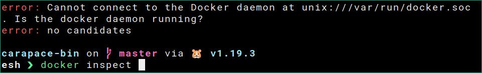
Usage message
Added Usage message which defaults to flag description / command usage.
This is only supported in elvish and zsh.
Since notifications are persistent in elvish it is only shown when there are no values to complete.
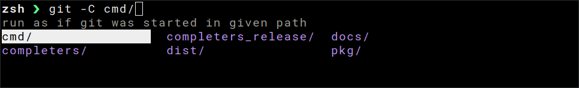
Tags
Completion values can now be tagged. Based on this they are grouped in zsh.
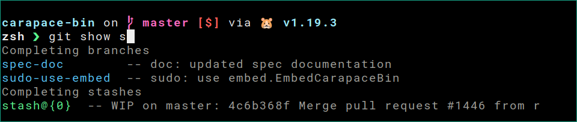
Command groups
Subcommands can now be grouped and will be highlighted in different colors.
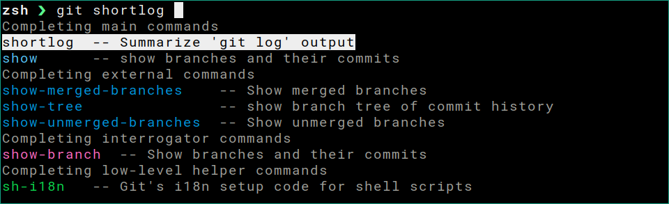
Group names
Group names can be shown in zsh with the following zstyle.
zstyle ':completion:*' format $'\e[2;37mCompleting %d\e[m'
Group ordering
Order of the groups can be configured in zsh with the following zstyle.
zstyle ':completion:*:git:*' group-order 'main commands' 'alias commands' 'external commands'
_describe
_describe is now used in zsh which enables the grouping of tags.
With this aliased commands and flags are now also arranged side by side.
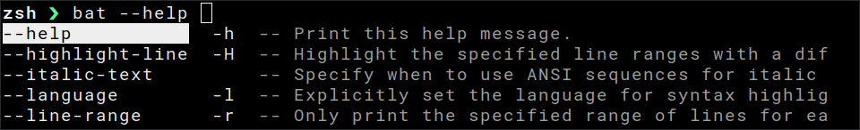
v0.18 - Spec Galore
Generate
Specs can now be generated from clap based commands with carapace-spec-clap.
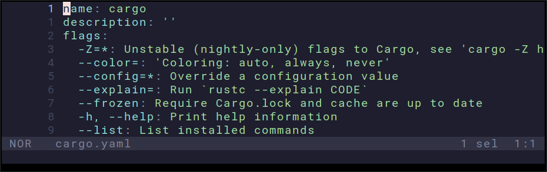
Scrape
For advanced completion these can further be converted to Go code with carapace --scrape [spec].
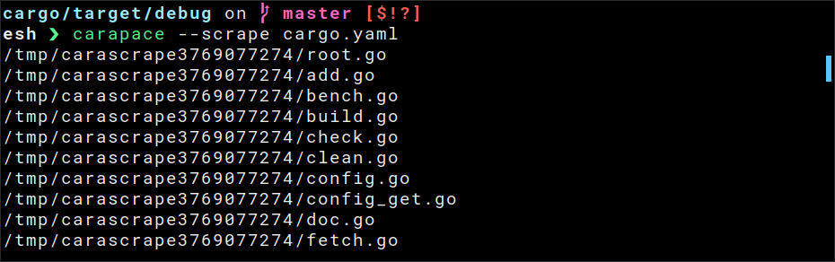
Json Schema
A JSON Schema is now written to ${UserConfigDir}/carapace/schema.json.
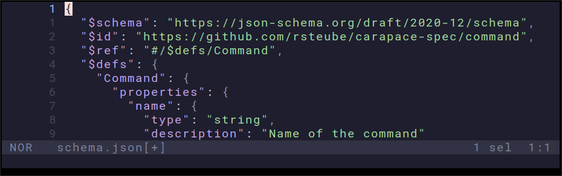
It can be used by adding the following header to a user spec:
# yaml-language-server: $schema=../schema.json
Windows
$(shell command) is now executed in Powershell on windows.
v0.17 - Spec-tacular Citizen
Specs are now first-class citizens in carapace. They are integrated on root level and should behave similar to the existing completers (carapace [spec.name] <TAB>).
List
Completers based on Specs are highlighted in shells that support colors (details: carapace --list=json):
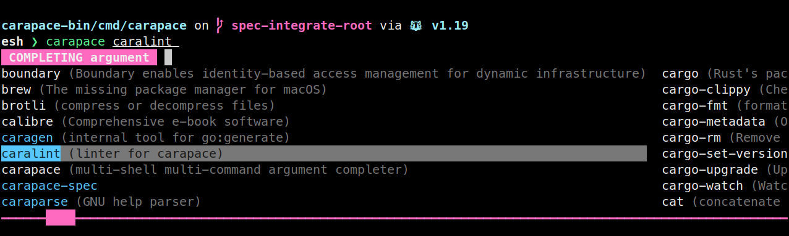
Bridge
Using Specs for bridging is from now on the recommended approach.
As these are auto-loaded with carapace _carapace and provide support for embedded completion like sudo [spec.name] <TAB>.
Existing completers with the same name will also be overridden.
E.g. kubectl (which is currently a bit outdated) can be configured to use the official completer:
# ${UserConfigDir}/carapace/specs/kubectl.yaml
name: kubectl
description: kubectl controls the Kubernetes cluster manager
completion:
positionalany: ["$_bridge.Cobra(kubectl)"]
Note that bridging adds a slight overhead (~7-9ms?) for each invocation and is limited to supported frameworks / commands.
Plugin
Taking this one step further plugin completion like cargo-[plugin], gh-[plugin], git-[plugin] can now also be defined by Specs.
E.g. the gh-repo-collab extension for github-cli:
# ${UserConfigDir}/carapace/specs/gh-repo-collab.yaml
name: gh-repo-collab
description: manage repository collaborators
commands:
-
name: list
completion:
positional:
- ["$_tools.gh.OwnerRepositories"]
-
name: add
flags:
--permission=: set permission
completion:
flag:
permission: ["pull", "triage", "push", "maintain", "admin\t\tred"]
positional:
- ["$_tools.gh.OwnerRepositories"]
- ["$_tools.gh.Users"]
-
name: remove
completion:
positional:
- ["$_tools.gh.OwnerRepositories"]
- ["$_tools.gh.Users"]
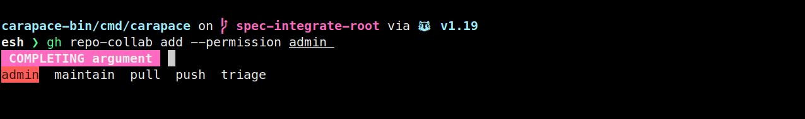
Nushell
With https://github.com/nushell/nushell/pull/6652 (upcoming v0.70.0) the nushell integration is now working on positional arguments.
The recommended configuration is equivalent to the example configuration in config.nu:
let carapace_completer = {|spans|
carapace $spans.0 nushell $spans | from json
}
let-env config = {
external_completer: $carapace_completer
}
Be sure to remove the
module completionsexample so that it won't override the carapace completion
v0.16 - Pandoras Box
Switched to a custom pflag fork with adaptions for non-posix variants like long shorthands (e.g. -shorthand).
So far this has been done by patching
os.Argswhich was rather hacky. Modifications to the flag parser are quite complex though, so there might be some issues.
see #1293
Spec files support non-posix flags now as well:
flags:
-np: non-posix shorthand
-np, -nonposix: non-posix shorthand and longhand
-np, --nonposix: non-posix shorthand mixed with posix longhand
v0.15 - Porcelain Shop

ZSH (this might break some stuff)
Added support for homedir (~) and static named directories.
These are not expanded by zsh for the completion function are thus now handled by carapace.
Quoting of special characters is now also done in carapace instead of compadd to skip ~ at appropriate times.
Edge cases where this doesn't work and some initial bugs regarding special characters not yet being handled correctly are expected.
see #1277
v0.14 - In A Nutshell

Nushell
https://github.com/nushell/nushell/pull/6295 adds support for external completers to nushell.
For this config.nu must be updated manually according to the snippet output of carapace.
Here's an example with carapace as default completer and a couple custom completers:
let external_completer = {|spans|
{
$spans.0: { carapace $spans.0 nushell $spans | from json } # default
example: { example _carapace nushell $spans | from json }
pkill: { carapace --spec '/home/rsteube/.config/carapace/specs/pkill.yaml' nushell $spans | from json }
vault: { carapace --bridge vault/posener nushell $spans | from json }
} | get $spans.0 | each {|it| do $it}
}
let-env config = {
external_completer: $external_completer
}
v0.13 - Furious
fury.io
DEB and RPM packages are now published to fury.io (Install)
v0.12 - Preinfusion

Preinvoke
Generic alteration of completion before execution which enables features like directory change in git -C <DIR>:

Spec
Experimental support for simple completions using yaml spec files:
name: example
description:
flags:
--dynamic=: dynamic value
-o, --optarg?: optarg flag
-s, --styled=: styled values
completion:
flag:
dynamic: ["$(git branch --all | cut -c 3- | sed 's/$/\t\tblue/')", "static value"]
optarg: ["first", "second", "third"]
styled:
- "blue\tblue\tblue"
- "cyan\tcyan\tcyan"
positional:
- ["pos1-a", "pos1-b", "pos1-c"]
- ["$_files"]
Spec Autoloading
Specs placed in ${UserConfigDir}/carapace/specs/ (UserConfigDir) are now registered with carapace _carapace.
File name must be the command to be completed and match ^[0-9a-zA-Z_\-.]+\.yaml$ (sanity check to avoid breakage in scripts).
Custom Macros
Exposed actions as custom macros (list with carapace --macros).
Removed the _ prefix from core macros to avoid clashes (e.g. $files, $directories).
Macro Arguments
Arguments are parsed as yaml ($macro(yaml) - e.g.: $_tools.gh.Users({users: true})).
Brackets are optional when no argument is passed ($files instead of $files()).
Variable Substitution
Variables are replaced using drone/envsubst for contextual completion:
name: myzip
completion:
positional:
- ["$files([.zip])"] # ${C_ARG0}
positionalany: ["$_fs.ZipFileContents(${C_ARG0})"] # ${C_ARG1},${C_ARG2},...
Flags are only added to env when their value changed (thus: ${C_FLAG_FLAGNAME:-default}):
name: myrefs
flags:
--tags: list tags # ${C_FLAG_TAGS}
--localbranches: list local branches # ${C_FLAG_LOCALBRANCHES}
--commits=: amount of commits # ${C_FLAG_COMMITS}
completion:
positional:
- ["$_tools.git.Refs({tags: ${C_FLAG_TAGS:-false}, localbranches: ${C_FLAG_LOCALBRANCHES:-false}, commits: ${C_FLAG_COMMITS:-0}})"] # refs based on flag values with defaults
- ["$_tools.git.Refs"] # default refs
- ["$(env)"] # env
v0.11 - Puking Rainbows
This release adds color support for zsh and elvish and thus raises elvish minimum version to v0.18.0.
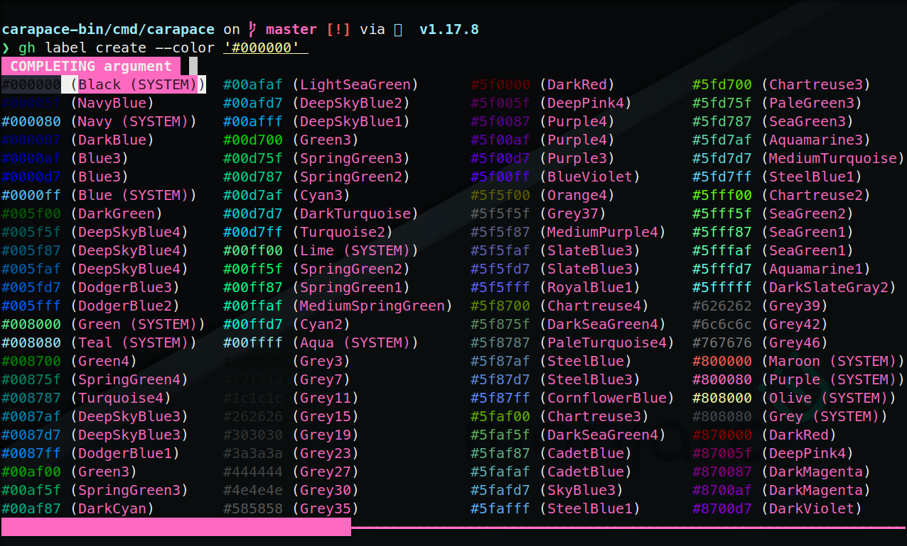
LS_COLORS
LS_COLORS should now be working correctly - e.g with vivid in elvish:
set E:LS_COLORS = (vivid generate dracula)
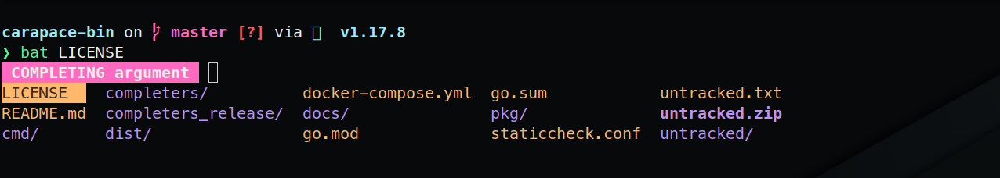
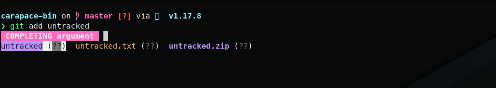
Style Config
Styles can now be configured with carapace --style key=value (an empty value restores the default).
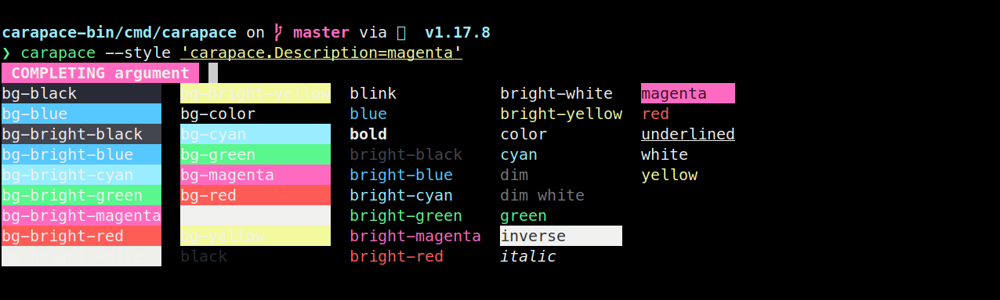
Powershell Style
Added color support for powershell.
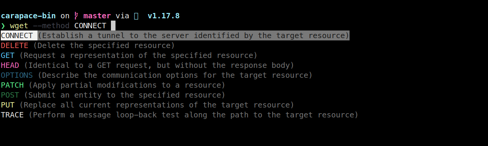